<!doctype html>
<html lang="en">
<head>
  <meta charset="utf-8">
  <meta name="viewport" content="width=device-width, initial-scale=1">
  <title>arxiv digest — 2026-09-25</title>
  <style>
:root {
  --bg: #ffffff;
  --fg: #1f2328;
  --muted: #59636e;
  --border: #d0d7de;
  --card: #f6f8fa;
  --link: #0969da;
}
body {
  max-width: 980px;
  margin: 0 auto;
  padding: 2rem 1rem 5rem;
  font-family: -apple-system, BlinkMacSystemFont, "Segoe UI", Helvetica, Arial, sans-serif;
  line-height: 1.55;
  color: var(--fg);
  background: var(--bg);
}
a { color: var(--link); }
img { max-width: 100%; height: auto; }
pre, code { background: var(--card); border-radius: 6px; }
pre { padding: 1rem; overflow-x: auto; }
blockquote { border-left: 4px solid var(--border); padding-left: 1rem; color: var(--muted); }
details { margin: 0.6rem 0; }
summary { cursor: pointer; font-weight: 600; }
.paper-figures-scroll {
  display: flex;
  gap: 1rem;
  overflow-x: auto;
  overscroll-behavior-x: contain;
  padding: 0.75rem 0.25rem 1rem;
  margin: 1rem 0 1.25rem;
  border-top: 1px solid var(--border);
  border-bottom: 1px solid var(--border);
  scroll-snap-type: x proximity;
}
.paper-figure-card {
  flex: 0 0 min(260px, 72vw);
  scroll-snap-align: start;
  background: var(--card);
  border: 1px solid var(--border);
  border-radius: 12px;
  padding: 0.55rem;
}
.paper-figure-card img {
  display: block;
  width: 100%;
  max-height: 240px;
  object-fit: contain;
  background: white;
  border-radius: 8px;
}
.paper-figure-caption {
  display: block;
  margin-top: 0.5rem;
  color: var(--muted);
  font-size: 0.85rem;
}
.figure-strip-hint {
  color: var(--muted);
  font-size: 0.9rem;
  margin-bottom: -0.3rem;
}
</style>
  <!-- MathJax: renders $...$ inline math and $$...$$ display math, plus
       \(...\) and \[...\]. Loaded from the official CDN; works offline
       once cached. Configured to skip code/pre blocks so arxiv IDs that
       look like dollar amounts don't get mangled. -->
  <script>
    window.MathJax = {
      tex: {
        inlineMath: [['$', '$'], ['\\(', '\\)']],
        displayMath: [['$$', '$$'], ['\\[', '\\]']],
        processEscapes: true,
        processEnvironments: true
      },
      options: {
        skipHtmlTags: ['script', 'noscript', 'style', 'textarea', 'pre', 'code'],
        ignoreHtmlClass: 'tex2jax_ignore',
        processHtmlClass: 'tex2jax_process'
      }
    };
  </script>
  <script id="MathJax-script" async
    src="https://cdn.jsdelivr.net/npm/mathjax@3/es5/tex-chtml.js"></script>
</head>
<body>
<header style="background-color: #333; color: white; padding: 15px; margin-bottom: 20px;">
  <h1 style="margin: 0; font-size: 24px;">
    <a href="https://ochelpan.github.io/arXiv_clean/" style="color: white; text-decoration: none;">Main</a>
  </h1>
</header>

<h1>Daily arXiv Report</h1>

<hr>
<p>
<a href="index.html">← Index</a>
 · <a href="papers_03.html">← Previous</a> · <a href="papers_05.html">Next →</a>
</p>
<hr>

<h2>Papers 61–80</h2>
<p><a id="paper-2609.27101"></a></p>
<h3 id="resonantly-enhanced-phonon-transport-by-magnon-pumping-in-a-ferromagneticpiezoelectric-bilayer"><a href="http://arxiv.org/abs/2609.27101v1">Resonantly Enhanced Phonon Transport by Magnon Pumping in a Ferromagnetic/Piezoelectric Bilayer</a></h3>
<p><strong>Authors:</strong> André José, Carlos Eduardo, Adrielson Dias, José Araújo, José Holanda<br>
<strong>Type:</strong> experiment · <strong>Category:</strong> other · <strong>PDF:</strong> <a href="https://arxiv.org/pdf/2609.27101v1">https://arxiv.org/pdf/2609.27101v1</a><br>
<strong>Analysis basis:</strong> full PDF text, analyzed in chunks
<strong>Topic relevance:</strong> <code>analog quantum simulation</code> <strong>2/5</strong> · <code>driven-dissipative phase transition</code> <strong>2/5</strong> · <code>correlated / nonlocal dissipation</code> <strong>1/5</strong> · <code>interference shaping light</code> <strong>1/5</strong> · <code>non-equilibrium universality</code> <strong>1/5</strong> · <code>quantum measurements</code> <strong>1/5</strong></p>
<div class="figure-strip-hint">↔ Scroll figures horizontally</div>
<div class="paper-figures-scroll">
<figure class="paper-figure-card">
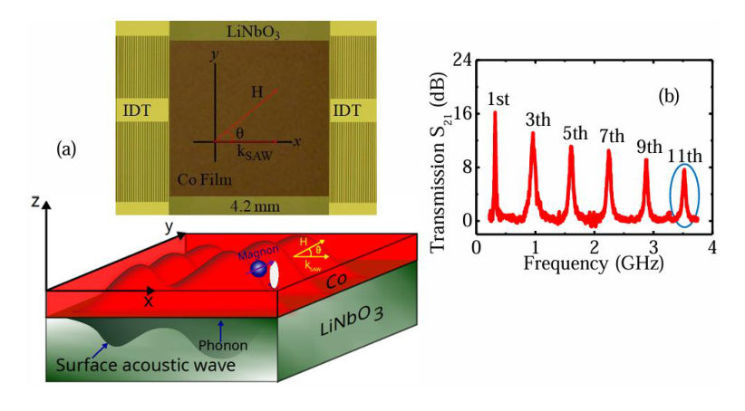
<figcaption class="paper-figure-caption"><b>Fig 1.</b> Figure 1: (a) Optical micrograph and schematic illustration of the Co/LiNbO3 hybrid SAW</figcaption>
</figure>
<figure class="paper-figure-card">
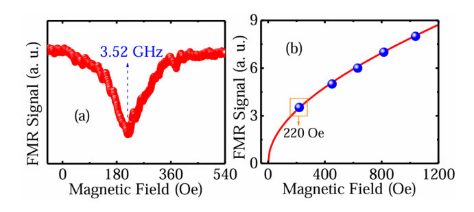
<figcaption class="paper-figure-caption"><b>Fig 2.</b> Figure 2: (a) Representative conventional ferromagnetic resonance spectrum of the 60-nm-</figcaption>
</figure>
<figure class="paper-figure-card">
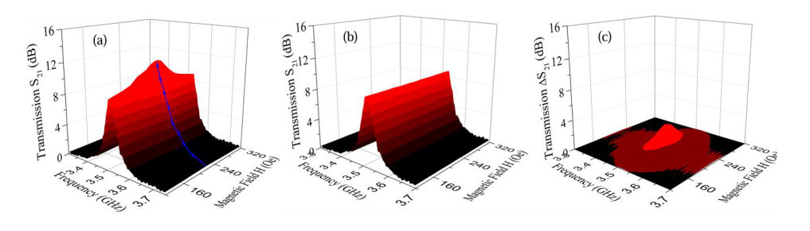
<figcaption class="paper-figure-caption"><b>Fig 3.</b> Figure 3: (a) Measured transmission coefficient (S21) of the Co/LiNbO3 bilayer as a function</figcaption>
</figure>
<figure class="paper-figure-card">
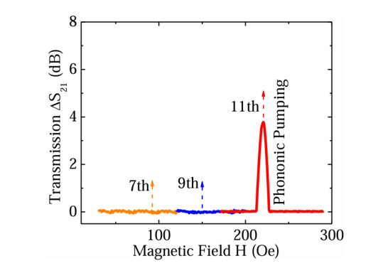
<figcaption class="paper-figure-caption"><b>Fig 4.</b> Figure 4: Differential transmission (ΔS21) measured as a function of the applied magnetic</figcaption>
</figure>
</div>

<p><strong>Summary.</strong> The researchers experimentally observed that propagating phonon transport in a ferromagnetic/piezoelectric bilayer is significantly enhanced only when the acoustic wave frequency matches the ferromagnetic resonance frequency of the magnetic film. This confirms a direct, resonant energy transfer mechanism from magnons to phonons, establishing a new method for actively controlling acoustic energy flow using magnetism.</p>
<p><strong>Why it may be interesting.</strong> This work provides a direct experimental realization of energy transfer between magnetic excitations (magnons) and mechanical waves (phonons) in a controlled, resonant manner, which is highly relevant for understanding coupled quantum systems.</p>
<details>
<summary>Detailed structure</summary>
<p><strong>Main problem.</strong> To experimentally demonstrate and investigate the phenomenon of resonantly enhanced propagating phonon transport induced by magnon pumping in a ferromagnetic/piezoelectric bilayer.</p>
<p><strong>Main result.</strong> The enhancement of the transmitted acoustic signal occurs exclusively when the SAW frequency matches the ferromagnetic resonance (FMR) condition, confirming resonant magnon-phonon coupling.</p>
<p><strong>Method.</strong> The study measures the SAW transmission coefficient ($S_{21}$) spectrum while sweeping the external magnetic field, comparing results on the bilayer versus a bare substrate.</p>
<p><strong>Model / system.</strong> The physical system is a Co/LiNbO3 hybrid bilayer. The interaction mechanism relies on magnetoelastic coupling between propagating Surface Acoustic Waves (SAWs) and the magnetization dynamics of the Co film.</p>
<p><strong>Key observables.</strong> The enhanced transmitted acoustic signal ($\Delta S_{21}$) measured as a function of the applied magnetic field and SAW harmonic.</p>
<p><strong>Important parameters / regimes.</strong> The SAW frequency must satisfy the Kittel dispersion relation for the Co film's FMR condition.</p>
<p><strong>Assumptions / limitations.</strong> The observed enhancement is solely due to the dynamic, resonant interaction between propagating phonons and coherent magnetization precession.</p>
<p><strong>Figures summary.</strong> Figures show the device schematic, the measured SAW transmission spectrum ($S_{21}$) highlighting the resonance, and comparisons showing that only the SAW harmonic matching the FMR condition exhibits the enhancement.</p>
<p><strong>Paper structure.</strong> The paper establishes the physical setup, uses FMR measurements to predict the resonance condition (Kittel fit), and then measures the SAW transmission, demonstrating that the enhancement is localized precisely at the predicted resonance field and is frequency-selective.</p>
</details>
<details>
<summary>Abstract</summary>
<p>We report the first experimental observation of resonantly enhanced propagating phonon transport induced by magnon pumping in a ferromagnetic/piezoelectric bilayer. Surface acoustic waves (SAWs) generated in a 128$^{\circ}$ Y-cut LiNbO$_3$ delay-line device resonantly excite magnetization dynamics in an adjacent Co film through magnetoelastic coupling. The enhancement of the transmitted acoustic signal occurs exclusively when the SAW frequency satisfies the ferromagnetic resonance condition predicted by the Kittel dispersion, providing a direct experimental fingerprint of resonant magnon-phonon coupling. A systematic comparison between the Co/LiNbO$_3$ bilayer and the bare LiNbO$_3$ substrate demonstrates that the observed transmission enhancement originates solely from the dynamic interaction between propagating phonons and coherent magnetization precession. Furthermore, measurements performed at different SAW harmonics reveal that only the harmonic satisfying the FMR condition produces a measurable enhancement, confirming the frequency-selective nature of the phenomenon. These findings establish an efficient mechanism for transferring energy from magnons to propagating phonons and provide a new strategy for actively controlling coherent acoustic transport in hybrid spintronic, straintronic, and quantum phononic platforms.</p>
</details>
<p><sub><a href="#top">↑ back to top</a></sub></p>

<p><a id="paper-2609.27626"></a></p>
<h3 id="the-refractive-index-of-the-medium-within-the-volume-of-deep-inelastic-math497math-scattering-i-group-velocity-of-interaction-carriers"><a href="http://arxiv.org/abs/2609.27626v1">The refractive index of the medium within the volume of deep inelastic $ep$ scattering: I. Group velocity of interaction carriers</a></h3>
<p><strong>Authors:</strong> B. B. Levchenko<br>
<strong>Type:</strong> both · <strong>Category:</strong> other · <strong>PDF:</strong> <a href="https://arxiv.org/pdf/2609.27626v1">https://arxiv.org/pdf/2609.27626v1</a><br>
<strong>Analysis basis:</strong> full PDF text, analyzed in chunks
<strong>Topic relevance:</strong> <code>Keldysh / 2PI / non-Gaussian methods</code> <strong>2/5</strong> · <code>analog quantum simulation</code> <strong>2/5</strong> · <code>methods for driven-dissipative</code> <strong>1/5</strong> · <code>quantum measurements</code> <strong>1/5</strong></p>
<div class="figure-strip-hint">↔ Scroll figures horizontally</div>
<div class="paper-figures-scroll">
<figure class="paper-figure-card">
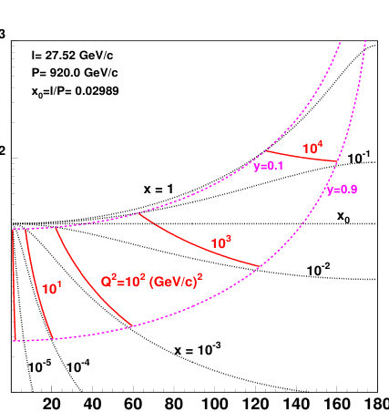
<figcaption class="paper-figure-caption"><b>Fig 1.</b> FIG. 1: Isolines of the kinematic variables x (short-dashed, black), Q2 (full, red), and y (long-dashed, magenda) are shown in the (θ, ℓ ′) phase space for electron-proton scatter- ing at the HERA collider. The polar angle, θ, of the scattered lepton is defined with respect to the direction of the incoming lepton. The momentum of the scattered lepton is ℓ ′. The line marked x0 corresponds to space-like virtual bosons.</figcaption>
</figure>
<figure class="paper-figure-card">
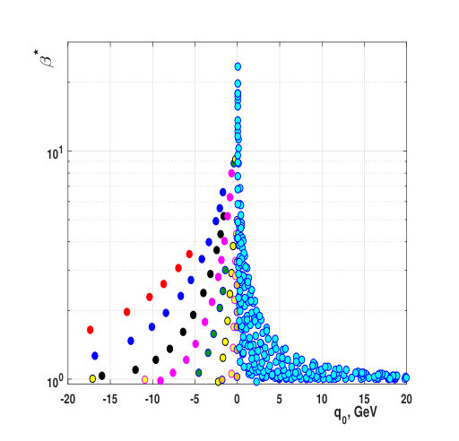
<figcaption class="paper-figure-caption"><b>Fig 2.</b> FIG. 3: The normalized speed of B, β∗= |U∗ B|/c, as a func- tion of the energy q0 extracted with the use of Eqs. (13)-(17) from the combined HERA II data for neutral current e+p deep inelastic scattering events at the center-of-mass energy √s ≈318 GeV [36], Table 10. The color of the markers cor- responds to different values of the variable x, as described in Table 1.</figcaption>
</figure>
<figure class="paper-figure-card">
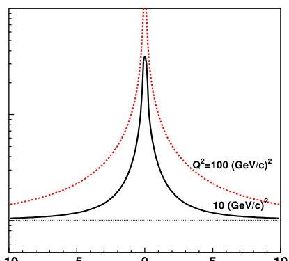
<figcaption class="paper-figure-caption"><b>Fig 3.</b> FIG. 2: The normalized virtual boson speed accoding to the model based on the relativistic dispersion relation (6) and the HERA collider kinematics.</figcaption>
</figure>
<figure class="paper-figure-card">
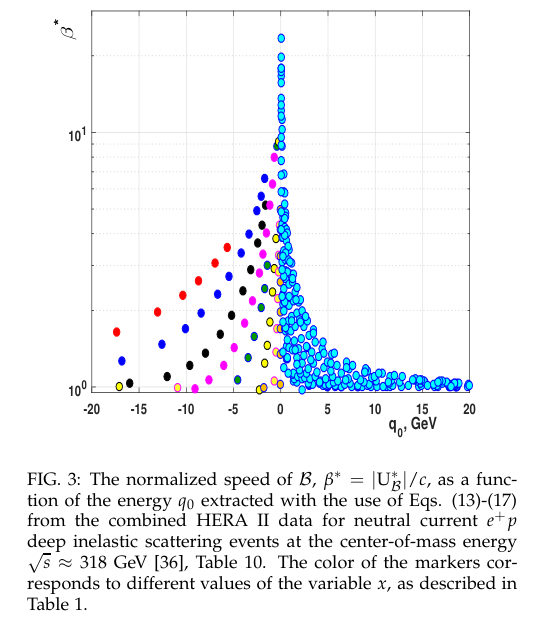
<figcaption class="paper-figure-caption"><b>Fig 4.</b> Figure 3 shows the speed of virtual B normalized to the speed of real photons as a function of q0 at different x-values. Data points are grouped into strips with same values of ¯x and marked with different colors (see cap- tion to Table 1). Such structuring reflects the kinematic relationship between the variables x, y and Q2, and the procedure for combining data from two different exper- iments by translation onto common grids [36].</figcaption>
</figure>
<figure class="paper-figure-card">
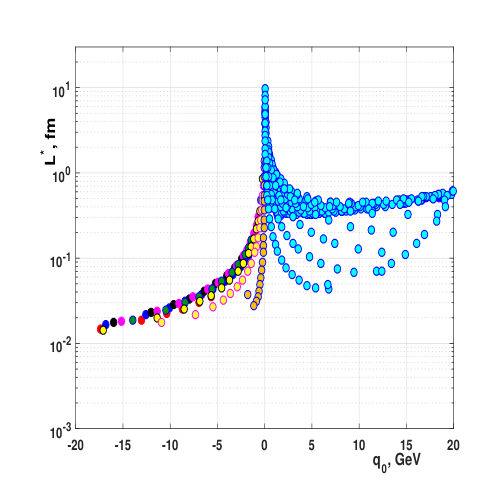
<figcaption class="paper-figure-caption"><b>Fig 5.</b> FIG. 4: The virtual B absorption mean free path L∗= cβ∗∆t (in femtometers) as a function of the energy q0, extracted with the use of Eqs (13)-(17) from the combined HERA II data for neutral current e+p deep inelastic scattering events at the center-of-mass energy √s ≈318 GeV [36], Table 10. The color of the markers is the same as in Fig. 3 and corresponds to different values of the variable x.</figcaption>
</figure>
</div>

<p><strong>Summary.</strong> This paper investigates the speed of the virtual mediator boson in deep inelastic scattering by treating the interaction region as a dispersive medium. It develops a theoretical framework relating group and phase velocities and applies it to HERA data. The key finding is that the derived speed can exceed the speed of light and exhibits strong singularities as the virtual boson's energy approaches zero.</p>
<p><strong>Why it may be interesting.</strong> While the core physics is high-energy particle physics, the methodology—using dispersion relations and velocity measurements to probe medium properties—shares conceptual overlap with how collective excitations are studied in condensed matter systems.</p>
<details>
<summary>Detailed structure</summary>
<p><strong>Main problem.</strong> The paper proposes a novel method to measure the characteristics of a fermion-boson medium formed during deep inelastic electron-proton scattering by analyzing the group and phase velocities of the mediating wave process.</p>
<p><strong>Main result.</strong> Analysis of HERA data suggests that the effective mediator boson's speed can exceed the speed of light in free space, and the derived model shows a strong, singular dependence on the virtual boson's energy ($q_0$) as $q_0$ approaches zero.</p>
<p><strong>Method.</strong> The authors use the Rayleigh differential condition and derive expressions for group and phase velocities from a relativistic dispersion relation model, comparing these theoretical predictions against indirect measurements from HERA collider data.</p>
<p><strong>Model / system.</strong> The physical system is deep inelastic $ep$ scattering, where the interaction is mediated by an effective, non-perturbative boson ($B$). The analysis utilizes a relativistic dispersion relation model ($\omega^2 = \omega_0^2 + c^2 \sum k_i^2$) to define the velocities.</p>
<p><strong>Key observables.</strong> Group velocity modulus ($U^*_B$), Phase velocity ($V^*_B$), Normalized speed ($eta^*$), and the absorption mean free path ($L^*$).</p>
<p><strong>Important parameters / regimes.</strong> Kinematic variables like $Q^2$, Bjorken variable $x$, and the virtual boson energy $q_0$. The analysis focuses on the limits $q_0 	o 0$ and $y 	o 1$.</p>
<p><strong>Assumptions / limitations.</strong> The analysis assumes the applicability of the Rayleigh condition and relies on deriving velocity estimates from modified Heisenberg uncertainty relations and specific kinematic limits.</p>
<p><strong>Figures summary.</strong> Figures illustrate the kinematic view of the scattering process, the dependence of the normalized speed ($eta^*$) on $q_0$ (showing divergence near $q_0=0$), and the extracted $eta^*$ vs. $Q^2$ from HERA II data.</p>
<p><strong>Paper structure.</strong> The paper progresses by establishing the theoretical framework (velocity definitions, Rayleigh condition), applying this framework to the DIS process, deriving model predictions for $eta^*(q_0)$, and finally comparing these model results against actual HERA experimental data across various kinematic limits.</p>
</details>
<details>
<summary>Abstract</summary>
<p>We propose a new method for measuring several characteristics of a fermion-boson medium formed during deep inelastic particle scattering. This method involves measuring the group and phase velocities of the accompanying wave process. The phase and group velocities of a wave process are related by the Rayleigh differential condition. The refractive index of a medium is determined by the phase velocity, while the group velocity characterises the medium's dispersion properties. In the case of deep inelastic $ep$ scattering under consideration, the wave process in an individual event is understood to be the exchange between an electron and a proton of an effective, non-perturbative mediator of interaction (${\cal B}$) with the quantum numbers of a neutral current. In the first report, we present new data on the group velocity of interaction carriers ${\cal B}$. We extracted the group velocity modulus values, $U_{_{\cal B}}^*$, from the HERA collider data using a formula derived from modified Heisenberg uncertainty relations and applying the indirect measurement method.. etc...(see preprint text)</p>
</details>
<p><sub><a href="#top">↑ back to top</a></sub></p>

<p><a id="paper-2609.27065"></a></p>
<h3 id="thermodynamic-uncertainty-relations-in-chaotic-andreev-billiards"><a href="http://arxiv.org/abs/2609.27065v1">Thermodynamic Uncertainty Relations in Chaotic Andreev Billiards</a></h3>
<p><strong>Authors:</strong> I. R. A. C. Lucena, T. J. A. Mori, M. M. Soares, D. Bazeia, A. R. Rocha<br>
<strong>Type:</strong> theory · <strong>Category:</strong> statistical mechanics · <strong>PDF:</strong> <a href="https://arxiv.org/pdf/2609.27065v1">https://arxiv.org/pdf/2609.27065v1</a><br>
<strong>Analysis basis:</strong> full PDF text, analyzed in chunks
<strong>Topic relevance:</strong> <code>Full counting statistics</code> <strong>2/5</strong> · <code>Keldysh / 2PI / non-Gaussian methods</code> <strong>1/5</strong> · <code>interference shaping light</code> <strong>1/5</strong> · <code>methods for driven-dissipative</code> <strong>1/5</strong></p>
<div class="figure-strip-hint">↔ Scroll figures horizontally</div>
<div class="paper-figures-scroll">
<figure class="paper-figure-card">
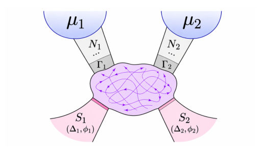
<figcaption class="paper-figure-caption"><b>Fig 1.</b> FIG. 1. Schematic view of the chaotic Andreev billiard in the universal regime. The mesoscopic cavity is coupled to two normal-metal electron reservoirs at chemical potentials µ1 and µ2 via leads supporting N1 and N2 open channels, and to superconducting contacts, S1 and S2. In the ballistic regime, electrons undergo multiple coherent reflections, leading to chaotic scattering.</figcaption>
</figure>
<figure class="paper-figure-card">
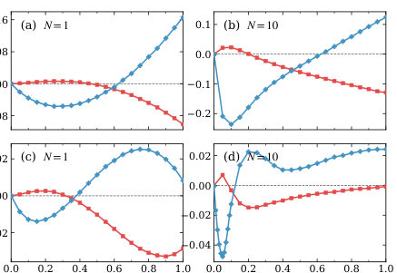
<figcaption class="paper-figure-caption"><b>Fig 2.</b> FIG. 3. Weak-localization correction GQIC to the conductance (upper panels) and the analogous correction PQIC to the shot- noise power (lower panels) as a function of Γ for all four Altland–Zirnbauer classes, for N = 1 (left) and N = 10 (right).</figcaption>
</figure>
<figure class="paper-figure-card">
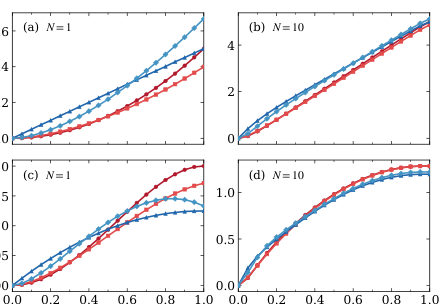
<figcaption class="paper-figure-caption"><b>Fig 3.</b> FIG. 2. Ensemble averages of the charge conductance G (up- per panels) and shot-noise power P (lower panels) as a function of barrier transparency Γ for all four Altland–Zirnbauer classes, for N = 1 (left) and N = 10 (right).</figcaption>
</figure>
<figure class="paper-figure-card">
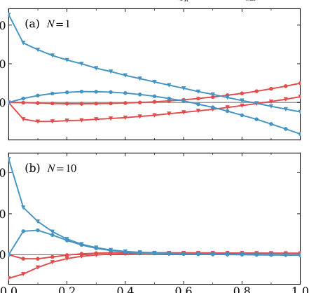
<figcaption class="paper-figure-caption"><b>Fig 4.</b> FIG. 5. Quantum interference correction QQIC to the TUR-R and TUR-MS for the DIII (T-CRE) and CI (T-CQE) Altland– Zirnbauer symmetry classes, as a function of barrier trans- parency Γ, for N = 1 (upper) and N = 10 (lower). Parameters: µ = 0.05 V and (kBT)−1 ≈2000 eV−1.</figcaption>
</figure>
<figure class="paper-figure-card">
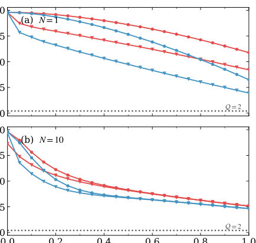
<figcaption class="paper-figure-caption"><b>Fig 5.</b> FIG. 4. Total factors QR and QMS for the DIII (T-CRE) and CI (T-CQE) Altland–Zirnbauer symmetry classes as a function of Γ. Both observables satisfy the TUR bound Q ≥2 for all values of Γ investigated. Parameters: µ = 0.05 V and (kBT)−1 ≈2000 eV−1.</figcaption>
</figure>
</div>

<p><strong>Summary.</strong> This work analyzes the Thermodynamic Uncertainty Relations in chaotic Andreev billiards, a system exhibiting particle-hole symmetry. By using RMT, the authors test how quantum interference and barrier transparency affect the TUR across various symmetry classes. They confirm that the fundamental thermodynamic bound remains satisfied, establishing TUR as a powerful symmetry-sensitive diagnostic tool for superconducting quantum transport.</p>
<p><strong>Why it may be interesting.</strong> The investigation of TUR in superconducting mesoscopic systems provides a unique, symmetry-sensitive probe of universal transport, linking quantum chaos, superconductivity, and fundamental thermodynamic laws.</p>
<details>
<summary>Detailed structure</summary>
<p><strong>Main problem.</strong> The study investigates how particle-hole symmetry, quantum interference, and tunnel barriers influence the Thermodynamic Uncertainty Relations (TUR) in chaotic Andreev billiards.</p>
<p><strong>Main result.</strong> The standard TUR bound is consistently satisfied across all investigated regimes, confirming that Andreev billiards remain compatible with fundamental thermodynamic constraints.</p>
<p><strong>Method.</strong> The research employs Random Matrix Theory (RMT) and the Mahaux–Weidenmüller scattering approach to analyze transport properties.</p>
<p><strong>Model / system.</strong> The system is an open chaotic Andreev billiard, modeled using the Bogoliubov-de Gennes (BdG) Hamiltonian, which inherently possesses particle-hole symmetry.</p>
<p><strong>Key observables.</strong> Charge conductance, shot noise power, and the TUR observable, $Q$, which is compared using two ensemble averages ($Q_R$ and $Q_{MS}$).</p>
<p><strong>Important parameters / regimes.</strong> The analysis spans multiple regimes: the extreme quantum limit ($N=1$) to the semiclassical multichannel regime ($N=10$), and varying barrier transparencies ($\Gamma$) from ideal to opaque.</p>
<p><strong>Assumptions / limitations.</strong> The analysis relies on the Random Matrix Theory framework and assumes operation within the universal RMT regime ($   au_\phi,    au_D \gg    au_E$).</p>
<p><strong>Figures summary.</strong> Figures illustrate the dependence of conductance, noise, and the TUR observable on barrier transparency ($\Gamma$) for different symmetry classes and system sizes, showing the relative contributions of quantum interference.</p>
<p><strong>Paper structure.</strong> The paper systematically analyzes the TUR across different symmetry classes and transport regimes, comparing two distinct definitions of the TUR observable to probe mesoscopic fluctuations and the role of quantum interference corrections.</p>
</details>
<details>
<summary>Abstract</summary>
<p>We investigate how particle-hole symmetry, quantum interference, and tunnel barriers shape thermodynamic uncertainty relations in chaotic Andreev billiards. Using random-matrix theory and the Mahaux-Weidenmüller scattering approach, we study charge conductance and shot noise across the four Altland-Zirnbauer symmetry classes, from the single-channel extreme quantum limit to the multichannel semiclassical regime and from ideal to opaque contacts. We characterize thermodynamic precision through two complementary ensemble observables: either by averaging the sample-resolved noise-to-conductance ratio, or from the separately averaging noise and conductance. Their pronounced discrepancy in the extreme quantum regime reveals the non-self-averaging character of mesoscopic transport and persists over a broad range of barrier transparencies. For ideal contacts, the first provides a sensitive fingerprint of the Altland-Zirnbauer symmetry class. In the opaque regime, this hierarchy changes. Despite these strong symmetry- and barrier-dependent effects, the standard thermodynamic uncertainty relation remains satisfied throughout all regimes investigated. Our results establish thermodynamic uncertainty as a symmetry-sensitive probe of universal transport in chaotic normal-superconducting systems.</p>
</details>
<p><sub><a href="#top">↑ back to top</a></sub></p>

<p><a id="paper-2609.28021"></a></p>
<h3 id="correlated-quasiperiodicity-enables-efficient-thermoelectric-energy-conversion"><a href="http://arxiv.org/abs/2609.28021v1">Correlated quasiperiodicity enables efficient thermoelectric energy conversion</a></h3>
<p><strong>Authors:</strong> Swaraj Biswas, Santanu K. Maiti<br>
<strong>Type:</strong> theory · <strong>Category:</strong> disordered systems and neural networks · <strong>PDF:</strong> <a href="https://arxiv.org/pdf/2609.28021v1">https://arxiv.org/pdf/2609.28021v1</a><br>
<strong>Analysis basis:</strong> full PDF text, analyzed in chunks
<strong>Topic relevance:</strong> <code>Frenkel-Kontorova</code> <strong>2/5</strong> · <code>Keldysh / 2PI / non-Gaussian methods</code> <strong>1/5</strong> · <code>methods for driven-dissipative</code> <strong>1/5</strong></p>
<div class="figure-strip-hint">↔ Scroll figures horizontally</div>
<div class="paper-figures-scroll">
<figure class="paper-figure-card">
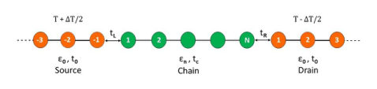
<figcaption class="paper-figure-caption"><b>Fig 1.</b> FIG. 1: (Color online). Schematic representation of a 1D chain coupled to two 1D heat baths, source and drain. The heat baths are kept at temperatures T +∆T/2 and T −∆T/2, respectively. T is the equilibrium temperature of the system, and ∆T is the temperature difference.</figcaption>
</figure>
<figure class="paper-figure-card">
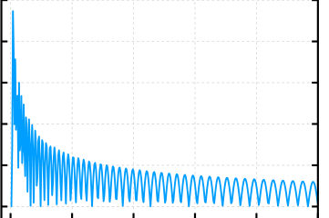
<figcaption class="paper-figure-caption"><b>Fig 2.</b> FIG. 2: (Color online). Absolute derivative of site potential as a function of site index.</figcaption>
</figure>
<figure class="paper-figure-card">
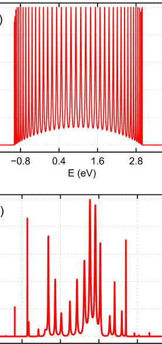
<figcaption class="paper-figure-caption"><b>Fig 3.</b> FIG. 3: (Color online). Electronic transmission probability as a function of energy for (a) ν = 0 and (b) ν = 0.55 with N = 40 and W = 1 eV.</figcaption>
</figure>
<figure class="paper-figure-card">
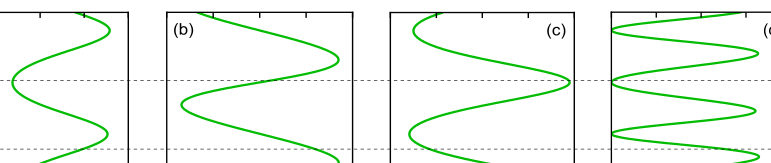
<figcaption class="paper-figure-caption"><b>Fig 4.</b> FIG. 4: (Color online). (a) Electrical conductance (G), (b) Seebeck coefficient (S), (c) thermal conductance (ke), and (d) figure of merit (ZT ) as a function of Fermi energy (EF ) for ν = 0 with N = 40 , T = 200 K, and W = 1 eV.</figcaption>
</figure>
<figure class="paper-figure-card">
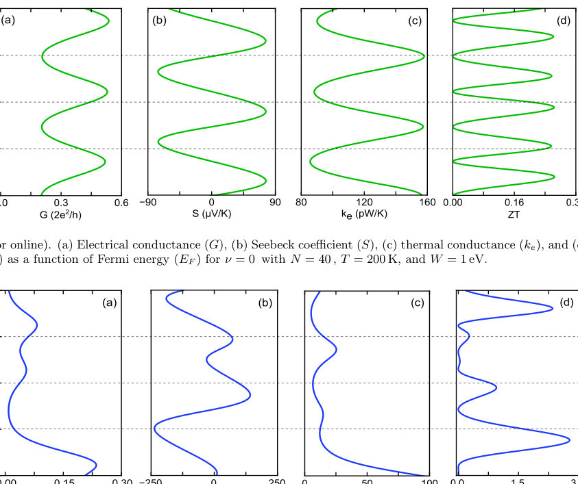
<figcaption class="paper-figure-caption"><b>Fig 5.</b> FIG. 5: (Color online). (a) Electrical conductance (G), (b) Seebeck coefficient (S), (c) thermal conductance (ke), and (d) figure of merit (ZT ) as a function of Fermi energy (EF ) for ν = 0.55 with N = 40, T = 200 K, and W = 1 eV.</figcaption>
</figure>
</div>

<p><strong>Summary.</strong> This work proposes using correlated quasiperiodic nanostructures to boost thermoelectric energy conversion efficiency. By modeling a 1D chain with an AAH-type potential, the authors show that the resulting non-uniform electronic transmission spectrum is crucial. This engineered disorder allows for high ZT values, surpassing those achievable in simpler or perfectly periodic systems.</p>
<p><strong>Why it may be interesting.</strong> The core mechanism relies on engineering the electronic density of states via quasiperiodicity, a concept deeply related to localization phenomena studied in disordered systems, making it relevant to understanding transport in complex, aperiodic materials.</p>
<details>
<summary>Detailed structure</summary>
<p><strong>Main problem.</strong> The paper investigates methods to enhance thermoelectric energy conversion efficiency in nanoscale systems by engineering the electronic energy landscape.</p>
<p><strong>Main result.</strong> Correlated quasiperiodic potentials, specifically weakly varying Aubry-André-Harper (AAH) potentials, can induce highly non-uniform electronic transmission spectra, leading to a figure of merit (ZT) exceeding 2.</p>
<p><strong>Method.</strong> The study employs the tight-binding framework combined with the non-equilibrium Green's function (NEGF) formalism and the Landauer approach to calculate transport coefficients.</p>
<p><strong>Model / system.</strong> The model is a one-dimensional quantum chain coupled to source and drain reservoirs, featuring a modulated on-site energy potential belonging to the AAH family. The potential is characterized by an incommensurability parameter ($
u$).</p>
<p><strong>Key observables.</strong> Figure of Merit (ZT), electrical conductance (G), Seebeck coefficient (S), electronic thermal conductance ($\kappa_e$), and phonon thermal conductance ($\kappa_{ph}$).</p>
<p><strong>Important parameters / regimes.</strong> Incommensurability factor ($
u$), disorder amplitude ($W$), Fermi energy ($E_F$), and temperature ($T$).</p>
<p><strong>Assumptions / limitations.</strong> The analysis is performed in the linear response regime, assuming small temperature differences ($\Delta T$), and includes detailed analysis of phonon contributions.</p>
<p><strong>Figures summary.</strong> Figures compare the electronic transmission spectrum ($    au(E)$) for perfect ($
u=0$) versus correlated ($
u=0.55$) lattices, showing the latter yields necessary asymmetry for high ZT. Other figures plot ZT vs. $E_F$, $
u$, and $T$.</p>
<p><strong>Paper structure.</strong> The paper systematically introduces the Hamiltonian and methods (NEGF/Landauer). It compares the results for perfect vs. correlated disorder, demonstrating that the non-uniformity induced by correlated disorder is key to maximizing ZT. Finally, it analyzes the dependence of ZT on coupling asymmetry and temperature.</p>
</details>
<details>
<summary>Abstract</summary>
<p>We investigate a route to enhanced thermoelectric energy conversion in nanoscale systems by exploiting a correlated quasiperiodic energy landscape in a one-dimensional chain coupled to source and drain reservoirs. The considered modulation generates a highly non-uniform electronic transmission spectrum, providing favorable conditions for achieving a large thermoelectric figure of merit. By systematically tuning the incommensurability parameter, a variety of quasiperiodic configurations are explored, several of which yield high values of the figure of merit exceeding $2$. Electronic transport properties are evaluated within a tight-binding framework using the non-equilibrium Green's function formalism, while the thermoelectric coefficients, including electrical conductance, Seebeck coefficient, and electronic thermal conductance, are determined through the Landauer approach. The underlying quasiperiodic potential belongs to the Aubry-André-Harper (AAH) family and exhibits a weakly varying spatial profile, leading to transmission characteristics that are favorable for thermoelectric optimization. The influence of phonon thermal conductance on the overall energy-conversion efficiency is also analyzed in detail. For the sake of completeness, we also critically inspect the effect of conductor to electrode coupling and the coupling asymmetry on $ZT$. We also check the thermoelectric response of conventional AAH system and an elaborate comparison is made with our chosen quantum system. Our findings highlight the potential of correlated quasiperiodic nanostructures as promising candidates for efficient thermoelectric applications.</p>
</details>
<p><sub><a href="#top">↑ back to top</a></sub></p>

<p><a id="paper-2609.28445"></a></p>
<h3 id="angular-modulations-in-magnetic-torque-induced-by-phase-transitions-in-the-triangular-supersolid-math541math-agniomath542math"><a href="http://arxiv.org/abs/2609.28445v1">Angular Modulations in Magnetic Torque Induced by Phase Transitions in the Triangular Supersolid $2H$-AgNiO$_2$</a></h3>
<p><strong>Authors:</strong> John S. Pearce, Zeyu Ma, Alimamy Bangura, Timo Sorgel, Martin Jansen, Radu Coldea, Amalia I. Coldea<br>
<strong>Type:</strong> both · <strong>Category:</strong> strongly correlated electrons · <strong>PDF:</strong> <a href="https://arxiv.org/pdf/2609.28445v1">https://arxiv.org/pdf/2609.28445v1</a><br>
<strong>Analysis basis:</strong> full PDF text, analyzed in chunks
<strong>Topic relevance:</strong> <code>analog quantum simulation</code> <strong>2/5</strong> · <code>quantum measurements</code> <strong>1/5</strong></p>
<div class="figure-strip-hint">↔ Scroll figures horizontally</div>
<div class="paper-figures-scroll">
<figure class="paper-figure-card">
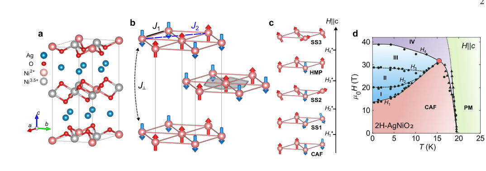
<figcaption class="paper-figure-caption"><b>Fig 1.</b> FIG. 1. Magnetic ordering in 2H-AgNiO2. (a) Crystallographic unit cell (space group P6322). (b) Collinear antiferromagnetic stripe ordering of Ni2+ ions (pink) on triangular layers. The shaded gray hexagon depicts a piece of itinerant Ni3.5+ honeycomb surrounding a Ni2+ spin. The full Ni3.5+ honeycomb has been omitted for clarity. J1,2,⊥are Heisenberg exchange interactions, corresponding to the first nearest-neighbour, second nearest-neighbour, and interlayer interactions, respectively. (c) Semi-classical cartoons depicting the collinear antiferromagnet (CAF), first supersolid (SS1), 2:1:1 canted supersolid (SS2), half-magnetisation plateau (HMP), and 3:1 canted supersolid (SS3) structures,...</figcaption>
</figure>
<figure class="paper-figure-card">
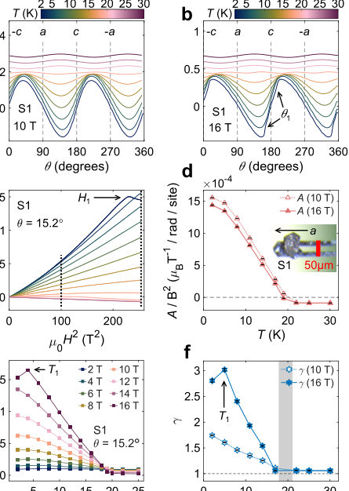
<figcaption class="paper-figure-caption"><b>Fig 2.</b> FIG. 2. Evolution of the angular dependence of the magnetic torque with temperature. (a, b) Angular dependence of the mag- netic torque τ of sample S1 at different temperatures and in constant magnetic fields of 10 T and 16 T, respectively. θ is the angle of the field with respect to the crystallographic c axis for field rotations within the ac plane. Traces have been offset vertically for clarity. Dashed vertical lines indicate where the magnetic field is aligned with crystallographic axes. In panel (b), the arrows labelled θ1 point to kinks in τ observed near the easy c axis at 2 K. (c, e) Torque ver- sus (c) field squared and (e) temperature at a constant θ = 15◦away from the c axis. In...</figcaption>
</figure>
<figure class="paper-figure-card">
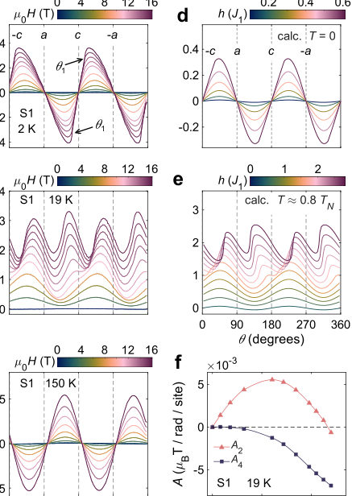
<figcaption class="paper-figure-caption"><b>Fig 3.</b> FIG. 3. Evolution of the angular dependence of magnetic torque with magnetic field. (a-c) Angular dependence of the magnetic torque for sample S1 in different magnetic field strengths up to 16 T and at constant temperatures of 2, 19, and 150 K, respectively. θ de- notes the field rotation angle with respect to the crystallographic −c axis in the ac plane. Traces have been offset vertically for clarity in panel (b). In (a), the arrows labelled θ1 point to kinks that appear near the easy c axis above 14 T. (d, e) Calculated angular dependence of the magnetic torque at T = 0 and 0.8 TN, respectively, using mean field theory and Monte Carlo. Traces are offset vertically for clar- ity in panel...</figcaption>
</figure>
<figure class="paper-figure-card">
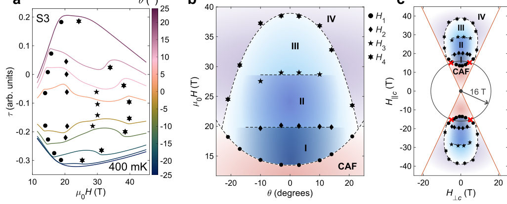
<figcaption class="paper-figure-caption"><b>Fig 4.</b> FIG. 4. Magnetic field dependence of the torque up to 45 T in different field orientations. (a) Field dependence of the magnetic torque at 400 mK measured at constant field angles, θ, tilted away from the easy axis. The locations of four torque anomalies H1−4 are indicated by circles, diamonds, stars and hexagrams, respectively. (b) Angular dependence of the transition fields H1−4. Dashed black lines are guides to the eye, dividing the experimentally observed CAF, I, II, III, and IV phases. (c) Polar phase diagram constructed at 400 mK after imposing a two-fold symmetry axis perpendicular to the easy axis. The vertical and horizontal axes correspond to the applied field components parallel...</figcaption>
</figure>
<figure class="paper-figure-card">
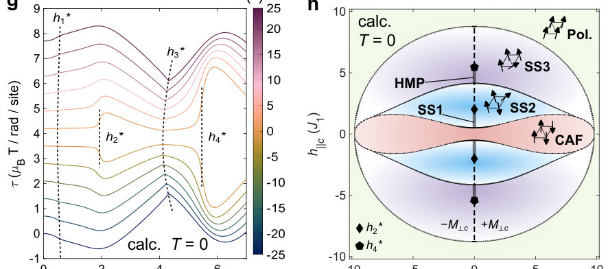
<figcaption class="paper-figure-caption"><b>Fig 5.</b> FIG. 5. Polar phase diagram at absolute zero for the J1-J2-D-J⊥model. (a-c) Mean field calculations of the magnetisation components (in units µB per spin) parallel and perpendicular to the easy axis, and the magnetic torque, respectively, for constant θ = 1◦away from the easy c axis. The inset in panel (c) shows a zoom-in of the torque at the field h∗ 1, with an arrow to highlight the transition. (d-f) Calculations analogous to panels (a-c) performed for constant θ = 20◦away from the easy axis. (g) Field dependence of the magnetic torque for different angles, θ, away from the easy axis. The transition fields h∗ 1 and h∗ 3 represent the CAF–SS2 and SS2–SS3 boundaries, respectively. h∗ 2 and...</figcaption>
</figure>
</div>

<p><strong>Summary.</strong> This work uses angle- and field-dependent magnetic torque measurements on $2H$-AgNiO$_2$ to map out its complex magnetic phase diagram. By comparing these experimental results with theoretical simulations, the authors confirm the existence of multiple field-induced transitions, providing strong evidence for a magnetic supersolid phase in this anisotropic material.</p>
<p><strong>Why it may be interesting.</strong> The study provides a concrete, measurable platform (magnetic torque) to probe exotic quantum phases like supersolids in a strongly correlated magnetic insulator, linking macroscopic measurements to microscopic spin models.</p>
<details>
<summary>Detailed structure</summary>
<p><strong>Main problem.</strong> The study investigates the complex magnetic phase transitions, particularly the potential supersolid phase, in the triangular lattice antiferromagnet $2H$-AgNiO$_2$.</p>
<p><strong>Main result.</strong> The angular and field-dependent magnetic torque measurements reveal characteristic sawtooth signals and multiple anomalies, which are qualitatively explained by crossing different predicted phase boundaries.</p>
<p><strong>Method.</strong> The research combines detailed experimental measurements of magnetic torque ($  au$) with theoretical modeling using mean-field and Monte-Carlo simulations on a minimal spin model.</p>
<p><strong>Model / system.</strong> The physical system is the delafossite $2H$-AgNiO$_2$, which features localized $S=1$ moments on a triangular lattice interacting with itinerant electrons. The theory uses a minimal easy-axis $J_1-J_2$ spin model.</p>
<p><strong>Key observables.</strong> Magnetic torque ($ au$) as a function of angle ($   heta$) and applied field ($H$), and the identification of multiple field-induced anomalies ($H_1$ to $H_4$).</p>
<p><strong>Important parameters / regimes.</strong> Critical temperatures ($T_N \approx 19$ K), applied fields up to 45 T, and anisotropy parameters ($D/J_1$).</p>
<p><strong>Assumptions / limitations.</strong> The theoretical analysis relies on a minimal spin model and semi-classical approximations, potentially neglecting quadrupolar moments or itinerant electron effects for certain anomalies.</p>
<p><strong>Figures summary.</strong> Figures illustrate the magnetic ordering (CAF, SS1, SS2, etc.) and show the evolution of the angular dependence of the torque ($   au$) at various temperatures and fields, highlighting kinks and anomalies corresponding to phase boundaries.</p>
<p><strong>Paper structure.</strong> The paper progresses by presenting experimental torque measurements across varying fields and angles, correlating the observed anomalies with theoretical phase diagrams constructed via mean-field and Monte-Carlo simulations to map out the complex magnetic phase space.</p>
</details>
<details>
<summary>Abstract</summary>
<p>Easy-axis frustrated triangular lattice antiferromagnets provide an important playground for stabilising a wide range of exotic magnetic phases. The delafossite $2H$-AgNiO$_2$ offers a unique model system containing a lattice of localised ($S=1$) moments surrounded by a honeycomb of itinerant electrons. Below $T_{\rm N} =19$ K, the system exhibits collinear stripe antiferromagnetic order, whereas applied magnetic fields induce a cascade of transitions which has been proposed to contain a magnetic supersolid phase. In this study, we perform detailed angular and field-dependent torque measurements in static fields of up to 45~T on single crystal samples. The angular dependence of the torque displays a sawtooth-shaped signal close to the first supersolid phase, while near $T_{\rm N}$, an unexpected additional modulation emerges. On the other hand, the field dependence of the torque indicates the presence of four field-induced anomalies which evolve in distinct ways as a function of field orientation. To understand these complex behaviours and assess the role of local moments, we employ mean-field and Monte-Carlo calculations on a minimal spin model and construct comprehensive polar phase diagrams at different temperatures. We find that the angular dependence of the torque can be understood in terms of crossing different phase boundaries by field rotation, and we identify qualitative similarities between the experimental and theoretical polar phase diagrams. Our study highlights $2H$-AgNiO$_2$ as a rich anisotropic system that provides a robust example of how spin supersolid orders can manifest in angle-dependent magnetic torque.</p>
</details>
<p><sub><a href="#top">↑ back to top</a></sub></p>

<p><a id="paper-2609.27306"></a></p>
<h3 id="discrete-diffusion-models-via-evolving-variational-autoregressive-networks"><a href="http://arxiv.org/abs/2609.27306v1">Discrete Diffusion Models via Evolving Variational Autoregressive Networks</a></h3>
<p><strong>Authors:</strong> Kewen Pan, Ying Tang<br>
<strong>Type:</strong> theory · <strong>Category:</strong> disordered systems and neural networks · <strong>PDF:</strong> <a href="https://arxiv.org/pdf/2609.27306v1">https://arxiv.org/pdf/2609.27306v1</a><br>
<strong>Analysis basis:</strong> full PDF text, analyzed in chunks
<strong>Topic relevance:</strong> <code>methods for driven-dissipative</code> <strong>2/5</strong> · <code>analog quantum simulation</code> <strong>1/5</strong></p>
<div class="figure-strip-hint">↔ Scroll figures horizontally</div>
<div class="paper-figures-scroll">
<figure class="paper-figure-card">
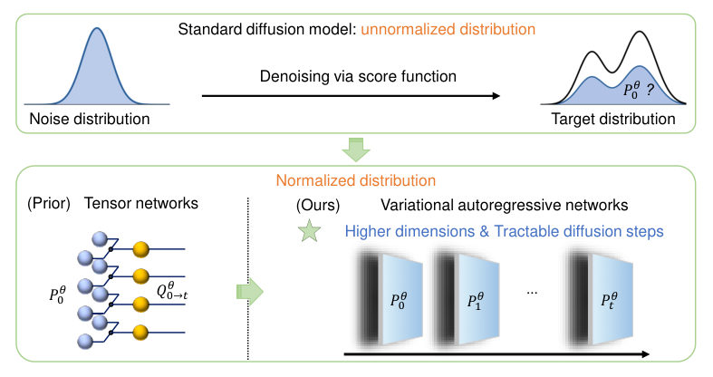
<figcaption class="paper-figure-caption"><b>Fig 1.</b> FIG. 1. Discrete diffusion model by denoising normalized distribution of variational autoregressive networks. Standard diffusion models adopt a forward noising process and recover samples via a learned score function, without yielding explicit and tractable normalized probability representations for physical simulations. Prior work based on tensor networks addressed this by encoding normalized distributions as matrix product states, and representing the operators acting on them as matrix product operators. Building on that idea, we replace tensor networks with VAN, which learns the normalized distribution at each diffusion step under a fixed transition operator. Compared with tensor...</figcaption>
</figure>
<figure class="paper-figure-card">
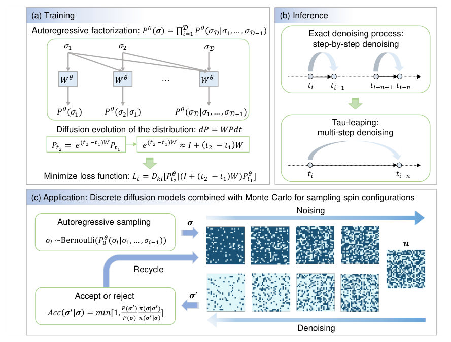
<figcaption class="paper-figure-caption"><b>Fig 2.</b> FIG. 2. Overview of our discrete diffusion model: training procedure, inference strategy, and application. (a) The autoregressive mechanism and diffusion evolution enable tractable optimization of the loss function. (b) We consider two denoising strategies for inference: an exact denoising scheme for the Euler-discretized forward noising process, and an accelerated denoising scheme based on the tau-leaping algorithm. (c) We integrate the discrete diffusion model with the MCMC sampler to enable efficient sampling of spin configurations.</figcaption>
</figure>
<figure class="paper-figure-card">
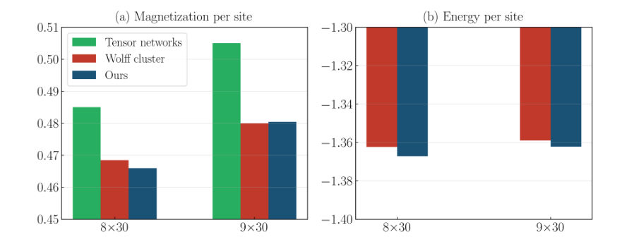
<figcaption class="paper-figure-caption"><b>Fig 3.</b> FIG. 3. Tensor networks and VAN-based discrete diffusion models on 2D Ising model. (a) Magnetization per site obtained via the tensor network approach [24], the Wolff cluster algorithm, and our method with averages taken over 105</figcaption>
</figure>
<figure class="paper-figure-card">
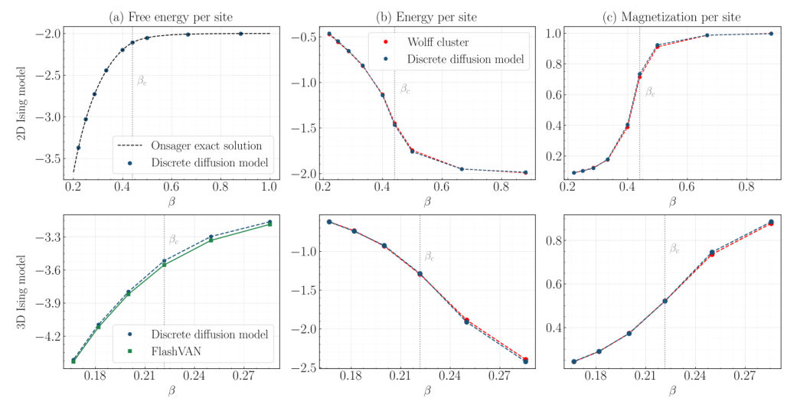
<figcaption class="paper-figure-caption"><b>Fig 4.</b> FIG. 4. Learned discrete diffusion models for 2D and 3D Ising models at distinct temperatures. (a) Free energy per site, (b) energy per site and (c) magnetization per site as functions of inverse temperature β. The upper row corresponds to the D = 16 × 16 two-dimensional Ising model with temperatures T = 1/β = 1/ ln  1 + √</figcaption>
</figure>
<figure class="paper-figure-card">
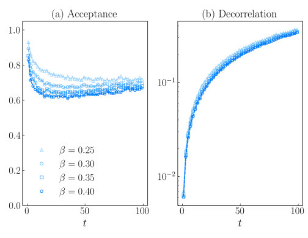
<figcaption class="paper-figure-caption"><b>Fig 5.</b> FIG. 5. Sampling characteristics for different distribu- tions and diffusion steps. (a) Acceptance rate as a func- tion of diffusion steps for N = 128 independent configurations of the 16×16 two-dimensional Ising model in the first MCMC iteration, each initialized at inverse temperature β = βc/2 and quenched to target inverse temperatures β = 0.25, 0.30, 0.35 and 0.40 (repeated over 40 independent runs). (b) Decor- relation coefficient versus diffusion steps for the same set of configurations at each target temperature. The results reveal two consistent trends across all tested temperatures: a larger temperature gap reduces both the acceptance and configura- tion decorrelation, while...</figcaption>
</figure>
</div>

<p><strong>Summary.</strong> This paper presents a novel discrete diffusion model utilizing Variational Autoregressive Networks (VAN) to accurately parameterize normalized probability distributions for spin systems. By applying this framework to the 2D and 3D Ising models, the authors successfully compute key thermodynamic quantities across different phases. This establishes a powerful, scalable neural-network approach for statistical mechanics simulations.</p>
<p><strong>Why it may be interesting.</strong> The integration of advanced deep learning (autoregressive networks) with established statistical physics tools (Ising models, MCMC) provides a powerful, generalizable computational framework for analyzing complex many-body systems.</p>
<details>
<summary>Detailed structure</summary>
<p><strong>Main problem.</strong> The paper addresses the need for a discrete diffusion model capable of parameterizing normalized probability distributions, overcoming limitations in both conventional score-based models and low-dimensional tensor-network approaches.</p>
<p><strong>Main result.</strong> They introduce a framework using Variational Autoregressive Networks (VAN) that successfully models normalized distributions for spin systems on higher-dimensional lattices, allowing for accurate computation of thermodynamic quantities.</p>
<p><strong>Method.</strong> The core method involves training a VAN to approximate the target Boltzmann distribution, governing the forward noising and reverse denoising dynamics via explicit Markov jump operators.</p>
<p><strong>Model / system.</strong> The model is applied to spin systems, specifically the two- and three-dimensional Ising model, whose target distribution follows the Boltzmann distribution $P(\sigma) \propto e^{-eta E(\sigma)}$.</p>
<p><strong>Key observables.</strong> Free energy, energy, and magnetization per site.</p>
<p><strong>Important parameters / regimes.</strong> Inverse temperature $eta$ (spanning ordered, critical, and disordered regimes); lattice dimensions (2D and 3D).</p>
<p><strong>Assumptions / limitations.</strong> The primary assumption is the use of the variational autoregressive factorization $P_	heta(\sigma) = \prod_{i=1}^D P_	heta(\sigma_i | \sigma_1, \dots, \sigma_{i-1})$ to decompose the joint probability.</p>
<p><strong>Figures summary.</strong> Figure 1 contrasts the proposed normalized VAN model against standard unnormalized diffusion models. Figure 2 provides an overview of the framework, detailing training, denoising strategies, and MCMC integration.</p>
<p><strong>Paper structure.</strong> The paper establishes the theoretical framework by defining the VAN-based discrete diffusion model, details the dynamics using Markov jump operators, applies it to the Ising model across various regimes, and integrates the method with MCMC sampling techniques.</p>
</details>
<details>
<summary>Abstract</summary>
<p>Conventional score-based diffusion models learn scores without representing normalized densities, whereas tractable normalized models support both sampling and direct likelihood evaluation. A recent tensor-network approach provides such a representation but is largely restricted to low-dimensional lattices. Here we introduce a discrete diffusion model that parameterizes normalized probability distributions using variational autoregressive networks. Explicit Markov jump operators govern the forward noising and reverse denoising dynamics, extending discrete diffusion models with normalized distributions to spin systems on higher-dimensional lattices. We apply this framework to the two- and three-dimensional Ising models across ordered, critical, and disordered regimes, accurately computing thermodynamic quantities including free energy, energy, and magnetization. We further integrate the framework with Monte Carlo sampling, using adaptive diffusion steps to maintain high acceptance rates even at low temperatures while enhancing sample diversity. These results establish a neural-network framework for the discrete diffusion model with normalized probability distributions.</p>
</details>
<p><sub><a href="#top">↑ back to top</a></sub></p>

<p><a id="paper-2609.27004"></a></p>
<h3 id="free-semigroup-non-relativistic-phase-space-states-quantisation"><a href="http://arxiv.org/abs/2609.27004v1">Free semigroup non-relativistic phase space states quantisation</a></h3>
<p><strong>Authors:</strong> Georgii Koniukov<br>
<strong>Type:</strong> theory · <strong>Category:</strong> other · <strong>PDF:</strong> <a href="https://arxiv.org/pdf/2609.27004v1">https://arxiv.org/pdf/2609.27004v1</a><br>
<strong>Analysis basis:</strong> full PDF text, analyzed in chunks
<strong>Topic relevance:</strong> <code>quantum measurements</code> <strong>2/5</strong> · <code>Keldysh / 2PI / non-Gaussian methods</code> <strong>1/5</strong></p>
<div class="figure-strip-hint">↔ Scroll figures horizontally</div>
<div class="paper-figures-scroll">
<figure class="paper-figure-card">
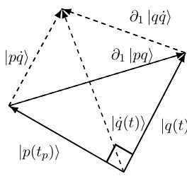
<figcaption class="paper-figure-caption"><b>Fig 1.</b> Figure 2. Legendre transformation.</figcaption>
</figure>
<figure class="paper-figure-card">
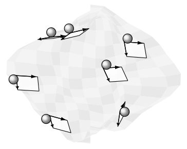
<figcaption class="paper-figure-caption"><b>Fig 2.</b> Figure 5. Main contributors (slow oscillations) to the path integral in case of quadratic potentials</figcaption>
</figure>
</div>

<p><strong>Summary.</strong> This paper proposes a novel quantization procedure for non-relativistic quantum mechanics by reformulating classical dynamics using a 'state language' based on free semigroups. It successfully derives the Schrödinger equation and the Born rule by analyzing the geometry of phase space states and path integral amplitudes. The work offers a mathematically rigorous, foundational approach to bridging classical and quantum descriptions.</p>
<p><strong>Why it may be interesting.</strong> The deep mathematical restructuring of classical dynamics using semigroup theory and the derivation of fundamental quantum rules like the Born rule from first principles make it highly relevant for foundational quantum theory.</p>
<details>
<summary>Detailed structure</summary>
<p><strong>Main problem.</strong> The paper addresses the quantization of non-relativistic phase space states by developing a formalism based on the free semigroup contribution of time, aiming to replace the principle of stationary action.</p>
<p><strong>Main result.</strong> The formalism successfully derives the Lagrangian and the Schrödinger equation from a state-vector approach, and it derives the Born rule by comparing path integral amplitudes with density matrix calculations.</p>
<p><strong>Method.</strong> The methodology involves introducing a 'state language/Dirac notation' for classical mechanics, dividing quantization into two stages (operator action and Planck scale consideration), and utilizing path integrals with time-slicing.</p>
<p><strong>Model / system.</strong> The model is non-relativistic quantum mechanics applied to a general 1D particle system, utilizing phase space concepts, state vectors, and path integrals. The Hamiltonian structure is central to the analysis.</p>
<p><strong>Key observables.</strong> The solid angle ($\Omega$) between states, the probability $p$ (for the Born rule), and the state vectors themselves ($|q
angle, |p
angle$).</p>
<p><strong>Important parameters / regimes.</strong> The Planck length ($\hbar$), the free semigroup time contribution, and the scale relative to $\hbar$ (quantum vs. classical limits).</p>
<p><strong>Assumptions / limitations.</strong> The formalism assumes the structure of time contribution as a free semigroup and relies on specific conventions for state definitions and operator ordering.</p>
<p><strong>Figures summary.</strong> Figures illustrate the Legendre transformation structure, the quantum limit of phase space states, and the quasi-classical limit of phase space states.</p>
<p><strong>Paper structure.</strong> The paper progresses by establishing a state language for classical mechanics, deriving the Lagrangian, analyzing the solid angle in phase space, deriving the path integral propagator, and finally applying the formalism to derive the Born rule.</p>
</details>
<details>
<summary>Abstract</summary>
<p>Quantisation is considered as an action of classical point operators on field states at the Planck scale of the phase space. Emphasis is placed on the sequence of physical variables. A "state language/Dirac notation" for classical mechanics is introduced; in many cases, it replaces the principle of stationary action for conservative systems. Observed classical and quantum dynamics are considered as different vectorisations of the free semigroup contribution of time. There is a dream of describing classical dynamics as complex transformations of state vectors over such a free semigroup, rather than solving differential equations. The transition from the alphabet to states, from states to state functions, and from state functions to measurable quantities is managed by projectors. An attempt is made to provide a derivation of the Legendre transformation. The trivial multiplication of the potential energy by the wave function in the coordinate representation and its non-trivial operator action in the momentum representation are obtained without a Fourier transform nor the Planck scale. The quantisation procedure is divided into two stages: first, the action of point-like classical operators on field functions; and second, accounting for the physically finite scale of the Planck length against the backdrop of the possible infinitesimality in the classical phase space. The concept of an angle between states is introduced, defining the measure of "quantumness". The free semigroup time contribution is studied in the context of the Born rule.</p>
</details>
<p><sub><a href="#top">↑ back to top</a></sub></p>

<p><a id="paper-2609.27662"></a></p>
<h3 id="geometric-perspective-on-quantum-rabi-model-super-adiabatic-universality-and-curvature-non-adiabatic-effects"><a href="http://arxiv.org/abs/2609.27662v1">Geometric perspective on quantum Rabi model: Super adiabatic universality and curvature non-adiabatic effects</a></h3>
<p><strong>Authors:</strong> Zu-Jian Ying<br>
<strong>Type:</strong> theory · <strong>Category:</strong> other · <strong>PDF:</strong> <a href="https://arxiv.org/pdf/2609.27662v1">https://arxiv.org/pdf/2609.27662v1</a><br>
<strong>Analysis basis:</strong> full PDF text, analyzed in chunks
<strong>Topic relevance:</strong> <code>analog quantum simulation</code> <strong>2/5</strong> · <code>Tavis-Cummings &amp; cavity-many-emitter</code> <strong>1/5</strong></p>
<div class="figure-strip-hint">↔ Scroll figures horizontally</div>
<div class="paper-figures-scroll">
<figure class="paper-figure-card">
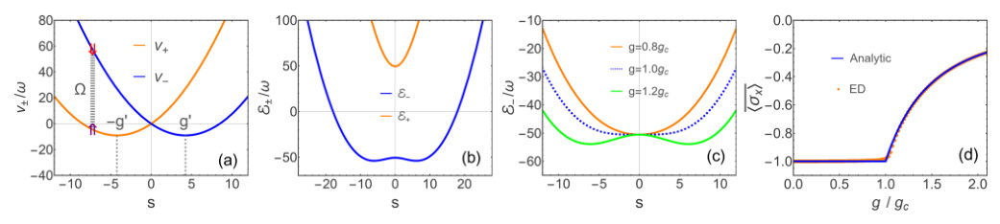
<figcaption class="paper-figure-caption"><b>Fig 1.</b> FIG. 1. Reliability of the adiabatic basis: Capturing the quantum phase transition (QPT). (a) Description of QRM in effective s space. (b) Local energy E±. (c) Dependence of lower-branch energy E−around gc. (d) Comparison of the spin expectation ⟨σx⟩[Eqs. (14) and (15)] with exact diagonalization (ED). Here ω = 0.01/Ωin all panels and g = 1.2gc in (a) and (b).</figcaption>
</figure>
<figure class="paper-figure-card">
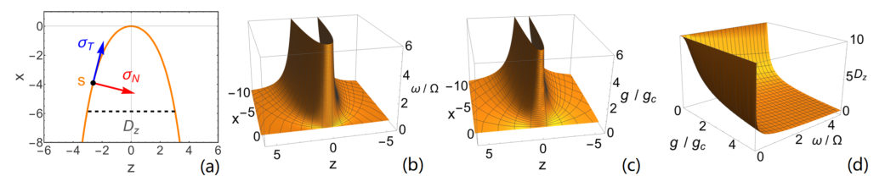
<figcaption class="paper-figure-caption"><b>Fig 2.</b> FIG. 2. Mapping the QRM to curved nanowire system with curvature controlled by the coupling or frequency. (a) Effective geometric path of the QRM in the z–x plane at ω = 0.5Ωand g = 0.8gc. (b) 3D plot for the geometric path depending on coupling g at ω = 0.5Ω. (c) 3D plot for the geometric path depending on frequency ω at g = 0.8gc. (d) 3D plot for the path width Dz depending on g and ω at |s| = 5.</figcaption>
</figure>
<figure class="paper-figure-card">
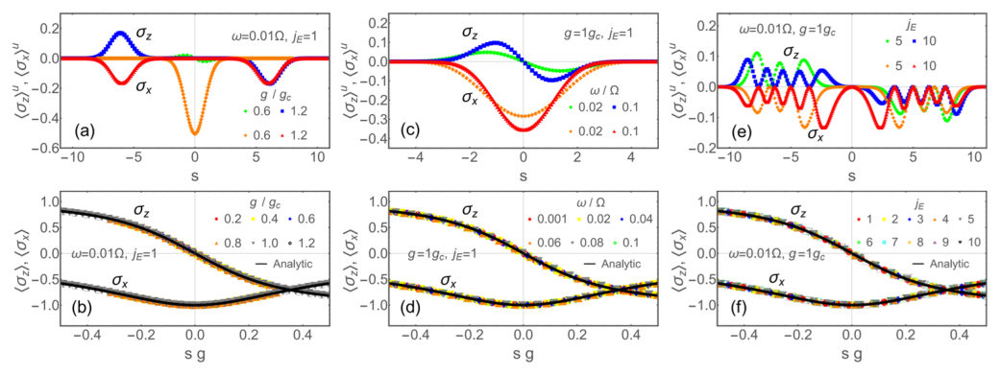
<figcaption class="paper-figure-caption"><b>Fig 3.</b> FIG. 3. Super adiabatic universality: Universal scaling relation of the spin texture ⟨σz,x⟩[(b), (d) and (f)] ubiquitously valid for different couplings g [(a) and (b)], different frequencies ω [(c) and (d)], different energy levels jE [(e) and (f)]. (a),(b) Different g/gc at ω = 0.01 for jE = 1 (ground state). (c),(d) Different ω/Ωat g = 1.0gc for jE = 1. (e),(f) Different excited states jE at ω = 0.01 and g = 1.0gc. In (a),(c) and (e) the diversified spin textures are unscaled (with superscript u), while in (b),(d) and (f) they are normalized by the density ρ and position scaled with sg. All the spin textures (symbols) collapse into a same line [(b),(d) and (f)] captured by the analytic...</figcaption>
</figure>
<figure class="paper-figure-card">
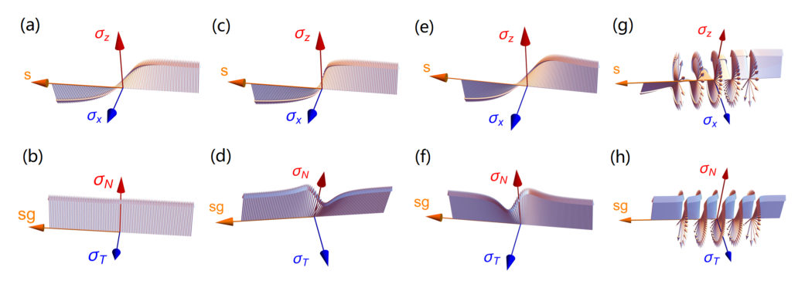
<figcaption class="paper-figure-caption"><b>Fig 4.</b> FIG. 4. Non-adiabatic 3D spin texture [(c)–(h)] compared with adiabatic one [(a) and (b)] in the lab frame [(a),(c),(e) and (g)] and curve frame [(b),(d),(f) and (h)]. (a),(b) ω = 0.1Ω, g = 1.0gc and jE = 1. (c),(d) ω = 0.1Ωand g = 3.0gc and jE = 1. (e),(f) ω = 2.0Ωand g = 1.0gc and jE = 1. (g),(h) ω = 0.1Ωand g = 1.0gc and jE = 6. In the curve frame [(b),(d),(f) and (h)] it is direct to see the non-adiabaticity arising when the spin trajectory deviates from the normal direction (labeled by σN), as in a large coupling (d), high frequency (f) or excited state (h).</figcaption>
</figure>
<figure class="paper-figure-card">
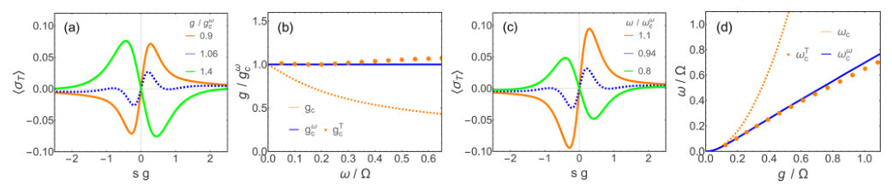
<figcaption class="paper-figure-caption"><b>Fig 5.</b> FIG. 5. Changeover of non-adiabatic spin-swing direction in association with the QPT of the QRM. (a) Spin swing in the tangential component ⟨σT ⟩around the QPT: g/gω c = 0.9 [orange (gray) solid], 1.06 (blue dotted]) and 1.4 [green (light gray) solid] at ω = 0.5Ω. (b) Frequency dependence of critical coupling gT c (ED, dots) of spin swing changeover in agreement with the analytical critical coupling gω c (blue solid line) of the QPT. (c) Spin swing in ⟨σT ⟩around the critical frequency: ω/ωω c = 1.1 [orange (gray) solid], 0.94 (blue dotted) and 0.8 [green (light gray) solid] at g = 0.8gω c . (d) Coupling dependence of critical frequency ωT c (ED, dots) of the tangential spin-swing...</figcaption>
</figure>
</div>

<p><strong>Summary.</strong> This paper introduces a novel geometric framework by mapping the Quantum Rabi Model (QRM) onto a curved nanowire system. This approach allows the authors to reveal a 'super-universality' in the adiabatic regime and provides a geometric interpretation for the QRM's quantum phase transition. The method offers a powerful tool for gaining deeper insights into light-matter interactions.</p>
<p><strong>Why it may be interesting.</strong> This work directly bridges geometry (curved manifolds) with fundamental quantum physics (light-matter interaction), offering a powerful, generalizable framework for understanding complex quantum dynamics beyond simple approximations.</p>
<details>
<summary>Detailed structure</summary>
<p><strong>Main problem.</strong> To develop a unified, geometric perspective for the Quantum Rabi Model (QRM) to understand its universal properties and the nature of its quantum phase transitions (QPTs).</p>
<p><strong>Main result.</strong> The geometric mapping reveals a 'super-universality' in the adiabatic regime and provides a geometric interpretation for the QPT via a changeover in the non-adiabatic spin texture.</p>
<p><strong>Method.</strong> The authors map the QRM to a curved nanowire system, employing geometric analysis, local diagonalization, and semiclassical approximations to analyze the system's behavior.</p>
<p><strong>Model / system.</strong> The study focuses on the Quantum Rabi Model (QRM), a fundamental model for light-matter interactions (LMIs). The analysis involves mapping this system onto a curved nanowire Hamiltonian that incorporates curvature-induced spin-orbit coupling (SOC).</p>
<p><strong>Key observables.</strong> Super-universality of spin texture, changeover of tangential spin swing direction, spectral bifurcation, and spectral oscillations.</p>
<p><strong>Important parameters / regimes.</strong> LMI strength ($g$), frequency ratio ($\omega/\Omega$), and the curvature of the nanowire geometry.</p>
<p><strong>Assumptions / limitations.</strong> The analysis relies on mapping the system to a curved geometry and utilizing approximations like the semiclassical limit in certain regimes.</p>
<p><strong>Figures summary.</strong> Figure 1 compares adiabatic basis results with exact diagonalization for QPT analysis. Figure 2 illustrates the mapping of the QRM onto a curved nanowire system, showing paths dependent on coupling and frequency.</p>
<p><strong>Paper structure.</strong> The paper introduces the QRM, develops the geometric mapping to a curved nanowire, analyzes the adiabatic and non-adiabatic regimes to find universal scaling laws, and interprets the QPT through geometric non-adiabaticity.</p>
</details>
<details>
<summary>Abstract</summary>
<p>Quantum Rabi model (QRM) is a fundamental model in light-matter interactions (LMIs), whereas this finite-component system manifests infinite physics to be explored and a full understanding has not yet been reached after a hundred years since it was proposed. In the present work we create a geometric perspective for the QRM by mapping to a curved nanowire system, with curvature-induced spin-orbit coupling (SOC) manipulatable by LMI strength and frequency ratio, which is capable of revealing and perceiving the property universality and diversity from the ground state to the whole spectrum in a unified picture. Indeed, we unveil a super university in the adiabatic regime which manifests a universal scaling of spin texture ubiquitously valid for different couplings, different frequencies and different energy levels. The curve frame also facilitates our finding that a direction changeover of tangential spin swing emerges in the non-adiabatic spin texture in association with the quantum phase transition (QPT) in the QRM, which endows a geometric non-adiabaticity interpretation and connotation to the QPT. We also clarify that, among the curvature-induced effects, the SOC accounts for the spectral bifurcation and oscillations. Our method and analysis, readily generalized to other light-matter models, opens a dialogue between geometry and physics, thus paving a novel way to gain deeper insight into LMIs.</p>
</details>
<p><sub><a href="#top">↑ back to top</a></sub></p>

<p><a id="paper-2609.28387"></a></p>
<h3 id="image-compression-using-quantum-wavelet-transform-and-quantum-convolutional-networks"><a href="http://arxiv.org/abs/2609.28387v1">Image Compression Using Quantum Wavelet Transform and Quantum Convolutional Networks</a></h3>
<p><strong>Authors:</strong> Harshdeep Jadhav, Sreeraj Rajan Warrier, Jayasri Dontabhaktuni<br>
<strong>Type:</strong> both · <strong>Category:</strong> quantum information and computing · <strong>PDF:</strong> <a href="https://arxiv.org/pdf/2609.28387v1">https://arxiv.org/pdf/2609.28387v1</a><br>
<strong>Analysis basis:</strong> full PDF text, analyzed in chunks
<strong>Topic relevance:</strong> <code>QC/QI experiment</code> <strong>2/5</strong> · <code>methods for driven-dissipative</code> <strong>1/5</strong></p>
<div class="figure-strip-hint">↔ Scroll figures horizontally</div>
<div class="paper-figures-scroll">
<figure class="paper-figure-card">
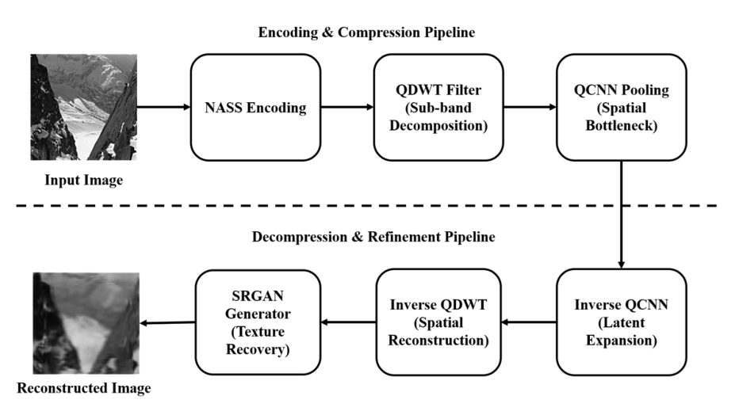
<figcaption class="paper-figure-caption"><b>Fig 1.</b> Figure 1: Overall schematic of the proposed hybrid quantum-classical image compression and decompression framework.</figcaption>
</figure>
<figure class="paper-figure-card">
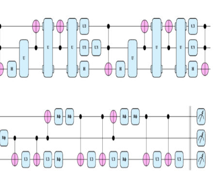
<figcaption class="paper-figure-caption"><b>Fig 2.</b> Figure 2: Quantum circuit structure for preparing a NASS state.</figcaption>
</figure>
<figure class="paper-figure-card">
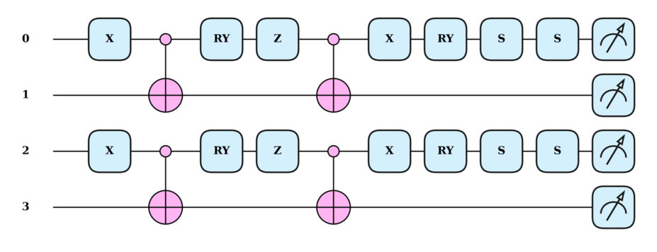
<figcaption class="paper-figure-caption"><b>Fig 3.</b> Figure 3: Quantum circuit implementing a 4-qubit Daubechies-like wavelet transform using multi-controlled gates and rotation-based filtering.</figcaption>
</figure>
<figure class="paper-figure-card">
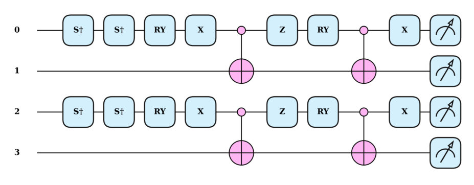
<figcaption class="paper-figure-caption"><b>Fig 4.</b> Figure 4: Quantum circuit implementing the inverse Daubechies D4 wavelet transform on a 4-qubit register.</figcaption>
</figure>
<figure class="paper-figure-card">
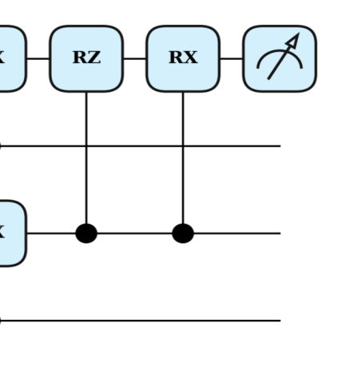
<figcaption class="paper-figure-caption"><b>Fig 5.</b> Figure 5: Quantum circuit used in QCNN for the Image Compression.</figcaption>
</figure>
</div>

<p><strong>Summary.</strong> This work proposes a hybrid quantum-classical framework for image compression, combining Variational Quantum Wavelet Transforms and Quantum CNNs for quantum feature extraction. The quantum latent representation is then refined using a classical Super-Resolution GAN, achieving state-of-the-art perceptual quality metrics. It demonstrates the potential of quantum computation to enhance classical signal processing tasks.</p>
<p><strong>Why it may be interesting.</strong> While focused on image processing, the reliance on variational quantum circuits (V-QDWT, QCNN) for feature extraction and dimensionality reduction provides a concrete, near-term application of quantum machine learning algorithms.</p>
<details>
<summary>Detailed structure</summary>
<p><strong>Main problem.</strong> The paper addresses the challenge of efficient and high-fidelity image compression and decompression by integrating quantum computational techniques with classical deep learning models.</p>
<p><strong>Main result.</strong> The hybrid quantum-classical framework achieves superior structural fidelity, with the final reconstruction significantly surpassing baseline quantum methods by incorporating a classical Super-Resolution GAN.</p>
<p><strong>Method.</strong> The process involves encoding images into quantum states (NASS), performing multi-resolution analysis using a Variational Quantum Daubechies Wavelet Transform (V-QDWT), and feature reduction via a trainable Quantum Convolutional Neural Network (QCNN).</p>
<p><strong>Model / system.</strong> The core model is a hybrid quantum-classical pipeline tested on NISQ hardware (IBM Fez) and simulated. It utilizes quantum circuits for state preparation, wavelet transforms, and convolutional layers, followed by classical SRGAN refinement.</p>
<p><strong>Key observables.</strong> PSNR (30.0667 dB), SSIM (0.8744), and Histogram Correlation (0.9244) are key performance metrics used to validate reconstruction quality.</p>
<p><strong>Important parameters / regimes.</strong> The compression ratio is mathematically defined (e.g., 4:1), and the process involves mapping pixel intensities to quantum rotation angles ($\phi_i$).</p>
<p><strong>Assumptions / limitations.</strong> The framework assumes the feasibility of implementing inverse QCNN and QDWT circuits, and that classical SRGAN post-processing is necessary to restore perceptual quality lost during quantum compression.</p>
<p><strong>Figures summary.</strong> Figures illustrate the overall hybrid framework schematic, quantum circuits for NASS state preparation and wavelet transforms, and comparisons showing the improvement from base quantum reconstruction to SRGAN-refined output.</p>
<p><strong>Paper structure.</strong> The paper details the encoding (NASS), the quantum compression pipeline (V-QDWT $
ightarrow$ QCNN), the decompression pipeline (Inverse QCNN $
ightarrow$ IQDWT $
ightarrow$ SRGAN), and includes ablation studies comparing quantum vs. classical components.</p>
</details>
<details>
<summary>Abstract</summary>
<p>This paper presents a hybrid quantum-classical framework for grayscale image compression and decompression, leveraging the strengths of quantum computing and deep learning. The compression pipeline integrates a Variational Quantum Daubechies Wavelet Transform (V-QDWT) and a trainable Quantum Convolutional Neural Network (QCNN) optimized end-to-end to achieve efficient, image-adaptive multi-resolution analysis and entanglement-based feature reduction. Input images are encoded using the Normal Arbitrary Superposition State (NASS) representation, enabling compact and scalable quantum storage. For decompression, we implement inverse QCNN and V-QDWT circuits to reconstruct coarse image features natively, followed by a classical Super-Resolution Generative Adversarial Network (SRGAN) to enhance perceptual quality. Experimental evaluations on benchmark grayscale datasets demonstrate the efficacy of our hybrid approach. By jointly training the quantum layers, the base quantum pipeline closely rivals classical JPEG2000 standards. Subsequent SRGAN refinement substantially pushes the boundaries of the reconstruction, achieving superior structural fidelity (PSNR: 30.0667 dB, SSIM: 0.8744, Histogram Correlation: 0.9244). Histogram analysis and qualitative comparisons further validate the restoration of fine textures and intensity distributions. Our findings highlight the potential of combining variational quantum compression with classical deep learning to enable efficient, scalable, and perceptually-aware image processing in quantum-enhanced computing environments.</p>
</details>
<p><sub><a href="#top">↑ back to top</a></sub></p>

<p><a id="paper-2609.26912"></a></p>
<h3 id="influence-of-fast-and-slow-laser-phase-noise-on-the-fidelity-of-the-mlmer-srensen-trapped-ion-gate"><a href="http://arxiv.org/abs/2609.26912v1">Influence of fast and slow laser phase noise on the fidelity of the Mølmer-Sørensen trapped-ion gate</a></h3>
<p><strong>Authors:</strong> Nikita Semenin, Ksenia Khabarova, Nikolay Kolachevsky<br>
<strong>Type:</strong> theory · <strong>Category:</strong> other · <strong>PDF:</strong> <a href="https://arxiv.org/pdf/2609.26912v1">https://arxiv.org/pdf/2609.26912v1</a><br>
<strong>Analysis basis:</strong> full PDF text, analyzed in chunks
<strong>Topic relevance:</strong> <code>QC/QI experiment</code> <strong>2/5</strong> · <code>Keldysh / 2PI / non-Gaussian methods</code> <strong>1/5</strong></p>
<div class="figure-strip-hint">↔ Scroll figures horizontally</div>
<div class="paper-figures-scroll">
<figure class="paper-figure-card">
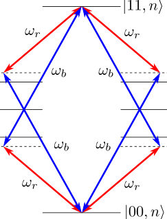
<figcaption class="paper-figure-caption"><b>Fig 1.</b> Figure 1. The MS gate level scheme. The bichromatic field (ωb, ωr) creates 4 Raman paths between states |00, n⟩↔|11, n⟩. The intermediate states are the blue and red motional sidebands of the l-th mode with frequency ωl</figcaption>
</figure>
<figure class="paper-figure-card">
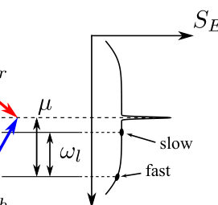
<figcaption class="paper-figure-caption"><b>Fig 2.</b> Figure 2. The influence of laser phase noise on the MS gate. Parasitic interactions arise from the overlap of the laser field power spectral density (PSD) SE(ω) with the closest states of the system, outlining the &quot;slow&quot; and &quot;fast&quot; parts (see main text)</figcaption>
</figure>
<figure class="paper-figure-card">
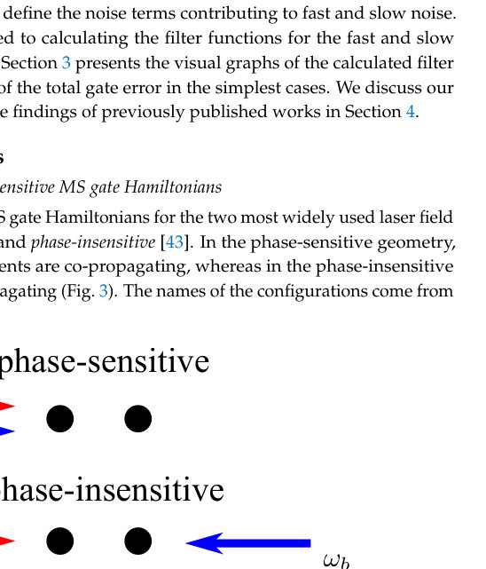
<figcaption class="paper-figure-caption"><b>Fig 3.</b> Figure 3. The phase-sensitive and phase-insensitive laser beam geometries. In this example the axial motional modes of the ionic chain are excited</figcaption>
</figure>
<figure class="paper-figure-card">
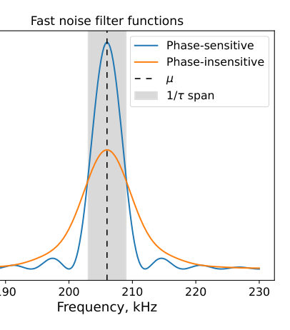
<figcaption class="paper-figure-caption"><b>Fig 4.</b> Figure 4. Filter functions for fast laser phase noise, both sensitive and insensitive configurations. The dashed line represents the detuning from the carrier transition µ. The width of the shaded region is 1/τ, where τ is the gate time. For other details of the calculation see main text</figcaption>
</figure>
<figure class="paper-figure-card">
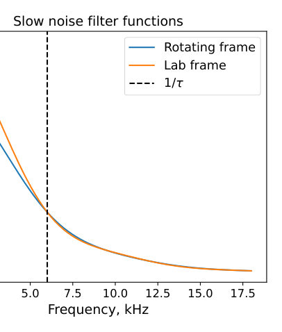
<figcaption class="paper-figure-caption"><b>Fig 5.</b> Figure 5. Slow laser frequency noise filter functions. The dashed line represents the value 1/τ. Note the different units compared to Ffast( f )</figcaption>
</figure>
</div>

<p><strong>Summary.</strong> This paper provides a detailed theoretical analysis of how laser phase noise affects the fidelity of the Mølmer-Sørensen gate in trapped-ion quantum computing. The authors derive analytical expressions for the gate error by separating the noise into 'fast' and 'slow' spectral components. This work offers essential quantitative guidelines for improving laser spectral purity in quantum processors.</p>
<p><strong>Why it may be interesting.</strong> This work provides crucial, detailed analytical tools for quantifying decoherence sources specific to trapped-ion quantum gates, which is vital for designing fault-tolerant quantum hardware.</p>
<details>
<summary>Detailed structure</summary>
<p><strong>Main problem.</strong> The paper analyzes how laser phase noise degrades the fidelity of the Mølmer-Sørensen (MS) entangling gate used in trapped-ion quantum computing.</p>
<p><strong>Main result.</strong> The gate error is shown to be determined by the convolution of the laser noise Power Spectral Density (PSD) with analytically derived filter functions, which are separated into 'fast' and 'slow' noise regimes.</p>
<p><strong>Method.</strong> The authors perform a comprehensive theoretical analysis, deriving noise Hamiltonians and calculating the average gate error using the Dyson series formalism, leading to analytical expressions for the error.</p>
<p><strong>Model / system.</strong> The system is trapped-ion quantum computing utilizing the Mølmer-Sørensen gate. The analysis models the influence of intrinsic laser phase noise on the qubit dynamics.</p>
<p><strong>Key observables.</strong> Gate Fidelity and the average gate error ($\epsilon$).</p>
<p><strong>Important parameters / regimes.</strong> Laser noise Power Spectral Density (PSD), gate time ($  au$), and spectral frequency ranges ('fast' near motional spectrum, 'slow' near inverse gate time).</p>
<p><strong>Assumptions / limitations.</strong> The analysis assumes the noise is intrinsic phase noise of the common laser source, and it utilizes approximations valid in the Lamb-Dicke regime.</p>
<p><strong>Figures summary.</strong> Figure 1 illustrates the MS gate level scheme with four Raman paths, and Figure 2 shows how the laser field PSD overlaps with system energy levels, distinguishing between 'slow' and 'fast' noise components.</p>
<p><strong>Paper structure.</strong> The paper progresses from defining the MS gate and the source of noise, to deriving the noise Hamiltonians for different geometries, calculating the error using the Dyson series, and finally presenting analytical expressions for the error in both fast and slow noise regimes.</p>
</details>
<details>
<summary>Abstract</summary>
<p>High-fidelity two-qubit entangling gates are essential for the realization of useful quantum algorithms on quantum processors. The Mølmer-Sørensen (MS) gate has become a common choice for trapped-ion quantum computing due to its resilience to ion temperature and its demonstrated record fidelities. However, the spectral impurity of the driving laser field impacts gate performance, with phase noise influencing the qubit dynamics through mechanisms operating on different timescales. In this work, we present a comprehensive theoretical analysis of laser phase noise in the MS gate, identifying two spectral ranges which influence the gate fidelity the most: "fast" noise at frequencies near the motional mode spectrum, and "slow" noise at frequencies on the order of the inverse gate time. We derive the noise Hamiltonians for two common laser beam geometries and obtain analytical expressions for the average gate error in terms of the laser noise power spectral density and gate parameters. For slowly varying noise spectra, we provide simplified error estimates. In addition, we validate our findings against previously published numerical simulations.</p>
</details>
<p><sub><a href="#top">↑ back to top</a></sub></p>

<p><a id="paper-2609.27128"></a></p>
<h3 id="efficient-learning-of-clifford-scrambled-product-states"><a href="http://arxiv.org/abs/2609.27128v1">Efficient Learning of Clifford-Scrambled Product States</a></h3>
<p><strong>Authors:</strong> Tobias Haug<br>
<strong>Type:</strong> theory · <strong>Category:</strong> quantum information and computing · <strong>PDF:</strong> <a href="https://arxiv.org/pdf/2609.27128v1">https://arxiv.org/pdf/2609.27128v1</a><br>
<strong>Analysis basis:</strong> full PDF text, analyzed in chunks
<strong>Topic relevance:</strong> <code>quantum measurements</code> <strong>2/5</strong></p>
<div class="figure-strip-hint">↔ Scroll figures horizontally</div>
<div class="paper-figures-scroll">
<figure class="paper-figure-card">
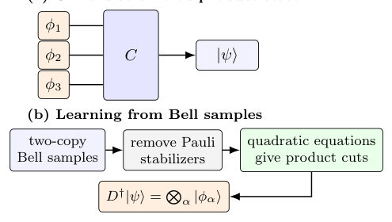
<figcaption class="paper-figure-caption"><b>Fig 1.</b> FIG. 1. Learning product subsystems hidden by a Clifford circuit. (a) The unknown Clifford C spreads the input blocks across the system and can generate volume-law entanglement. (b) We measure pairs of copies in the Bell basis. Affine equa- tions identify Pauli stabilizers, and quadratic equations on the residual samples determine the hidden subsystems. Applying the learned Clifford decoder D† to fresh copies disentangles the subsystems, followed by tomography of each block.</figcaption>
</figure>
</div>

<p><strong>Summary.</strong> This work presents a method to efficiently determine the underlying product structure of quantum states that have been scrambled by Clifford circuits. By analyzing quadratic relations derived from two-copy Bell sampling, the authors can pinpoint the hidden independent subsystems. This advances the field by providing scalable measurement-based techniques for characterizing complex quantum entanglement structures.</p>
<p><strong>Why it may be interesting.</strong> The techniques developed for state tomography and structure recovery using limited measurements (Bell samples) are highly relevant for characterizing complex quantum states generated in quantum computation or quantum simulation settings.</p>
<details>
<summary>Detailed structure</summary>
<p><strong>Main problem.</strong> The paper addresses the challenge of efficiently recovering the hidden product structure of quantum states that have been scrambled by a global Clifford circuit.</p>
<p><strong>Main result.</strong> The hidden product structure can be efficiently recovered using two-copy Bell sampling by analyzing the quadratic relations satisfied by the samples, which determine unique irreducible symplectic subspaces.</p>
<p><strong>Method.</strong> The core method involves using two-copy Bell sampling to generate quadratic equations, which are then analyzed via polarization to extract bilinear forms that identify the independent product subsystems.</p>
<p><strong>Model / system.</strong> The system under study consists of $n$-qubit pure states prepared by applying a global Clifford circuit to independent product blocks, often analyzed via their Choi states or Bell samples.</p>
<p><strong>Key observables.</strong> Clifford-product width ($w_{CP}(\psi)$), quadratic relations satisfied by Bell samples, and the gap ($\gamma_2$) between the state and the Haar random ensemble.</p>
<p><strong>Important parameters / regimes.</strong> The required number of Bell samples scales polynomially, often $O(n^2)$, for both exact and approximate learning.</p>
<p><strong>Assumptions / limitations.</strong> Approximate learning relies on the state remaining sufficiently separated from acquiring additional Pauli stabilizers, and exact recovery depends on the gap $\gamma_2$ being large enough.</p>
<p><strong>Figures summary.</strong> Figure 1 illustrates the process: (a) a Clifford-scrambled product state, and (b) the recovery process using Bell samples where affine equations identify stabilizers and quadratic equations determine hidden subsystems.</p>
<p><strong>Paper structure.</strong> The paper progresses from establishing the general framework using two-copy Bell sampling to deriving theorems that classify the product structure using quadratic forms (Theorem 1). It then quantifies the sample complexity for exact recovery (Theorem 2) and extends this to approximate learning (Theorem 4), concluding with distinguishing these states from Haar random states.</p>
</details>
<details>
<summary>Abstract</summary>
<p>Clifford circuits acting on product magic states provide a compact ansatz exhibiting extensive magic, volume-law entanglement, and even classically hard sampling under standard complexity assumptions. Here, we efficiently recover its hidden product subsystems from two-copy Bell sampling. Quadratic relations between Bell samples determine the irreducible blocks after removing Pauli stabilizers, and binary linear algebra constructs a Clifford disentangler. For logarithmic-size blocks, approximate learning of the full state is efficient whenever the state remains inverse-polynomially separated from acquiring additional Pauli stabilizers. We efficiently learn $n$-qubit states prepared by random $T$-doped Clifford circuits with $T$-gate density below one via $O(n^2)$ Bell samples, and disentangle hidden product blocks in Clifford-augmented matrix product states. For unitary learning, we exactly learn $T$-depth-one circuits using $O(n^2)$ queries. Finally, we rule out pseudorandom states and unitaries with a product bipartition hidden by Clifford circuits.</p>
</details>
<p><sub><a href="#top">↑ back to top</a></sub></p>

<p><a id="paper-2609.26881"></a></p>
<h3 id="fermion-bag-study-of-the-two-dimensional-majorana-hubbard-model-at-finite-hopping"><a href="http://arxiv.org/abs/2609.26881v1">Fermion bag study of the two-dimensional Majorana-Hubbard model at finite hopping</a></h3>
<p><strong>Authors:</strong> Mark Johnston, Emilie Huffman<br>
<strong>Type:</strong> theory · <strong>Category:</strong> strongly correlated electrons · <strong>PDF:</strong> <a href="https://arxiv.org/pdf/2609.26881v1">https://arxiv.org/pdf/2609.26881v1</a><br>
<strong>Analysis basis:</strong> full PDF text, analyzed in chunks
<strong>Topic relevance:</strong> <code>analog quantum simulation</code> <strong>2/5</strong></p>
<div class="figure-strip-hint">↔ Scroll figures horizontally</div>
<div class="paper-figures-scroll">
<figure class="paper-figure-card">
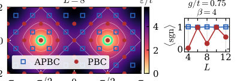
<figcaption class="paper-figure-caption"><b>Fig 1.</b> FIG. 1. (a) π-flux square lattice with one Majorana per site, defining ηij. Shaded: one plaquette carrying the interaction gηijηklγiγjγkγl. (b) Average sign at β = L/4 versus g/t with APBC. The sign is unity to g ≃0.6t and then decays with volume near the mean-field transition g ≃0.9t (dashed). (c) Free-fermion spectrum ϵ(k) for L = 8 showing the two Ma- jorana cones at k = (±π/2, 0) that form one two-component Dirac fermion. PBC contains the zero modes whenever 4 | L, while APBC is displaced by π/L and never do. Inset: the sign at fixed (g, β) collapses at 4 | L PBC and is flat APBC.</figcaption>
</figure>
<figure class="paper-figure-card">
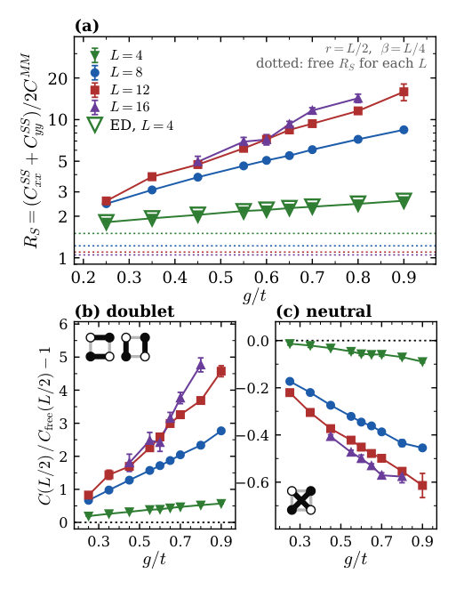
<figcaption class="paper-figure-caption"><b>Fig 2.</b> FIG. 2. (a) Channel ratio RS = (CSS xx + CSS yy )/2CMM at r = L/2 versus g/t. Sx, Sy are the columnar dimerization operators, the two real components of the U(1)-charged dou- blet ψeψo, and M the U(1)-neutral Dirac mass. RS exceeds its free value everywhere and rises with g and L. (b,c) The two channels separately, each relative to its own free value at the same (L, β). The doublet lies above the free theory and rises with g and with L, to 3.9 ± 0.3 times free at L = 16, g = 0.7t; the neutral lies below and falls with both, to 0.40 of free at the same point. The two channels move in opposite directions at every coupling and size. The cartoons mark the bonds each operator lives on:...</figcaption>
</figure>
<figure class="paper-figure-card">
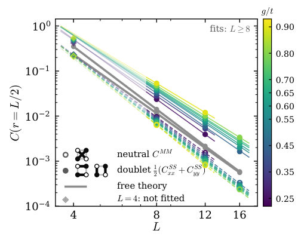
<figcaption class="paper-figure-caption"><b>Fig 3.</b> FIG. 3. Connected correlators of the charged doublet 1/2(CSS xx + CSS yy ) (filled, solid fits) and of the neutral mass CMM (open, dashed) at r = L/2 versus L on logarithmic axes. The free theory is in gray and at the same β. Lines are power-law fits C ∝L−p, fitted to L &gt; 4 values. They are faded and continued back through L = 4. Both channels re- main power-law through g = 0.9t on these sizes, and the two exponents move in opposite directions with g: for the range g = 0.25t to 0.8t the doublet moved from from p = 4.40(14) to 3.81(6) against the free 4.64, the neutral from 4.54(2) to 4.88(7) against the free 4.39.</figcaption>
</figure>
<figure class="paper-figure-card">

<figcaption class="paper-figure-caption"><b>Fig 4.</b> FIG. 4. With Φ = Sx + iSy, the charge-4 correlator ⟨Φ(0)Φ(r)⟩can be used to compute whether U(1) emerges. Its imaginary part, the off-diagonal 1</figcaption>
</figure>
</div>

<p><strong>Summary.</strong> This work tackles the computationally difficult problem of simulating the 2D Majorana-Hubbard model at finite hopping using advanced Quantum Monte Carlo methods based on Pfaffians. The authors successfully remove the sign problem for a significant parameter range and find that the system remains a gapless semimetal, confirming theoretical predictions about its electronic structure.</p>
<p><strong>Why it may be interesting.</strong> The rigorous application of advanced QMC techniques (Pfaffians) to a model featuring Majorana fermions and emergent symmetries provides deep insights into topological phases relevant to condensed matter physics.</p>
<details>
<summary>Detailed structure</summary>
<p><strong>Main problem.</strong> The primary challenge is performing nonperturbative lattice calculations for the two-dimensional Majorana-Hubbard model at finite hopping, which was previously limited to zero hopping.</p>
<p><strong>Main result.</strong> The simulations consistently show that the system remains in a gapless semimetal phase across the sign-problem-minimal parameter window, confirming the expected behavior.</p>
<p><strong>Method.</strong> Quantum Monte Carlo (QMC) simulations are employed using novel Hamiltonian fermion bags, which utilize Pfaffians derived from a continuous-time expansion to manage the sign problem.</p>
<p><strong>Model / system.</strong> The system is the two-dimensional Majorana-Hubbard model defined on a $\pi$-flux lattice, involving one relativistic Majorana fermion per site. The Hamiltonian includes hopping terms ($t$) and interaction terms ($g$).</p>
<p><strong>Key observables.</strong> Dimerization correlators (charged doublet vs. neutral singlet), the average sign, and the free-fermion spectrum $\epsilon(\mathbf{k})$ showing Dirac points.</p>
<p><strong>Important parameters / regimes.</strong> Coupling strengths ($g/t$), hopping parameter ($t$), and lattice size/inverse temperature ($eta=L/4$).</p>
<p><strong>Assumptions / limitations.</strong> The method relies on the Pfaffian calculation being stable and successfully removing the sign problem for couplings $g \lesssim 0.7$ and specific $eta$ values.</p>
<p><strong>Figures summary.</strong> Figures illustrate the $\pi$-flux lattice structure, the free-fermion spectrum with Dirac points, and the evolution of the average sign and correlation functions as a function of interaction strength $g/t$.</p>
<p><strong>Paper structure.</strong> The paper introduces the model and the computational difficulty (sign problem), details the Hamiltonian fermion bag QMC method using Pfaffians, presents results showing sign-problem removal, and concludes by analyzing the symmetry and gapless nature of the resulting semimetal.</p>
</details>
<details>
<summary>Abstract</summary>
<p>The two-dimensional Majorana-Hubbard model on the $π$-flux lattice involves the most local interaction possible for a lattice with one relativistic Majorana fermion per site. It is predicted to host a Majorana semimetal, dimerized phases, and quantum-critical points with an emergent $U(1)$ symmetry. Nonperturbative lattice calculations for this model remain a major open challenge, thus far limited to zero hopping. We present quantum Monte Carlo simulations of the model at finite hopping using Hamiltonian fermion bags, which are based on a continuous-time expansion with Boltzmann weights that are Pfaffians of a matrix with dimension set by the expansion order, and which give the sign of the weight. Sign problem severity is related to the location of zero modes in the free hopping matrix, and for couplings $g\lesssim 0.7$ and $β=L/4$ it is fully removed for lattices up to at least $256$ sites. The interaction strength $g>0$ enhances the $U(1)$-charged dimerization doublet and suppresses the neutral channel, as the renormalization group predicts. Increasing the interactions also restores $U(1)$ symmetry in the component of the dimerization correlator that is even under bond orientation exchange, but not its odd component. There is a persistent anisotropy in the odd component with the symmetry of a lattice nematic. The data is consistent with a gapless semimetal throughout the sign-problem-minimal window.</p>
</details>
<p><sub><a href="#top">↑ back to top</a></sub></p>

<p><a id="paper-2609.27324"></a></p>
<h3 id="mobility-gap-robustness-and-streda-hall-separation-in-disordered-axion-pumping"><a href="http://arxiv.org/abs/2609.27324v1">Mobility-Gap Robustness and Středa-Hall Separation in Disordered Axion Pumping</a></h3>
<p><strong>Authors:</strong> Bryan Leung, Emil Prodan<br>
<strong>Type:</strong> theory · <strong>Category:</strong> strongly correlated electrons · <strong>PDF:</strong> <a href="https://arxiv.org/pdf/2609.27324v1">https://arxiv.org/pdf/2609.27324v1</a><br>
<strong>Analysis basis:</strong> full PDF text, analyzed in chunks
<strong>Topic relevance:</strong> <code>analog quantum simulation</code> <strong>2/5</strong></p>
<div class="figure-strip-hint">↔ Scroll figures horizontally</div>
<div class="paper-figures-scroll">
<figure class="paper-figure-card">

<figcaption class="paper-figure-caption"><b>Fig 1.</b> FIG. 1. Clean spectra and topological responses. Panels (a) and (b) show spectra versus τ for L = 9 with periodic and open boundary conditions in z, respectively. Panel (c) shows Ch2(τ) (red) and ∂ϕCh0,3(τ) (blue) at L = 60, M = 2048, Nτ = 20; dashed curves show the τ-resolved integrands (right axis).</figcaption>
</figure>
<figure class="paper-figure-card">

<figcaption class="paper-figure-caption"><b>Fig 2.</b> FIG. 3. Ch2 and ∂ϕCh0,3 versus W at L = 60, M = 2048 (5 disorder realizations). The shaded mobility-gap regime ex- tends from Wg ≈14.5 to Wc ≈18.</figcaption>
</figure>
<figure class="paper-figure-card">

<figcaption class="paper-figure-caption"><b>Fig 3.</b> FIG. 2. Mobility-gap window at EF = 0. (a) Spectral gap for L = 60 and 20 disorder realizations; the cyan line marks global spectral gap closure Wg ≈14.5, and blue dashed con- tours show ⟨r⟩= 0.55 and 0.57 from panel (b). (b) Level- spacing ratio ⟨r⟩(τ, W) for L = 24 (500 realizations); dashed contours mark 0.50, 0.55, and 0.57. (c) Fixed-τ cuts for L = 24 (k = 30, |E| &lt; 0.25, 1000 realizations). (d) Finite-size flow at τ = 0 for L = 24–60 (1000 realizations at L = 24, 500 otherwise), giving the critical disorder Wc ≈18. See Ref. [27] for the τ-resolved finite-size scaling.</figcaption>
</figure>
<figure class="paper-figure-card">

<figcaption class="paper-figure-caption"><b>Fig 4.</b> FIG. 5. KPM-order extrapolation at L = 60 (5 disorder real- izations). Filled markers show Ch2 and ∂ϕCh0,3 at M = 2048; open markers show linear extrapolations to 1/M = 0. Shad- ing marks the mobility-gap window.</figcaption>
</figure>
<figure class="paper-figure-card">

<figcaption class="paper-figure-caption"><b>Fig 5.</b> FIG. 4. Finite-size and KPM-order scaling for W = 14.5–18. Top: Ch2; bottom: ∂ϕCh0,3. Panels (a) and (c) show devia- tions from −1 versus L, with exponential fits and fit lengths ξtop and ξ, respectively (M = 2048; 20 disorder realizations for L = 30, 10 for L = 36, 42, and 5 for L = 48, 54, 60). Panels (b) and (d) show KPM-order scaling at L = 60 for M = 512, 768, 1024, 2048, 4096, using 5 disorder realizations, with linear fits in 1/M.</figcaption>
</figure>
</div>

<p><strong>Summary.</strong> This work investigates the robustness of topological quantization in a disordered 3D axion pump. The authors show that the second Chern number ($  ext{Ch}_2$) remains quantized even when the system's spectral gap closes, a phenomenon distinct from the behavior of the Středa-Hall response. This demonstrates a robust topological protection mechanism surviving deep into the mobility-gap regime.</p>
<p><strong>Why it may be interesting.</strong> The concept of mobility-gap protection for topological invariants is highly relevant to understanding robust quantum states in realistic, disordered condensed matter systems, which is a key area for quantum simulation and topological quantum computing.</p>
<details>
<summary>Detailed structure</summary>
<p><strong>Main problem.</strong> The paper investigates the robustness of the quantized second Chern number ($ ext{Ch}<em ext_Ch="ext{Ch">2$) in a disordered, dynamically pumped axion insulator, specifically comparing its protection mechanism to the Středa-Hall response ($\partial\phi</em>$).}0,3</p>
<p><strong>Main result.</strong> The second Chern number ($ ext{Ch}_2$) remains quantized well into the mobility-gap regime beyond the global spectral gap closure, while the Středa-Hall response rapidly departs, demonstrating a distinct form of topological protection.</p>
<p><strong>Method.</strong> The study employs large-scale numerical computations, including the Kernel Polynomial Method (KPM) for calculating topological invariants and analyzing level statistics to detect Anderson transitions.</p>
<p><strong>Model / system.</strong> The system is a (3+1)D disordered axion pump, modeled as a stack of bilayer Haldane sheets with $   au$-dependent interlayer coupling. A 1D counterpart (Rice–Mele model) is also analyzed for contrast.</p>
<p><strong>Key observables.</strong> Second Chern number ($ ext{Ch}<em ext_Ch="ext{Ch">2$), Středa-Hall response ($\partial\phi</em>$), Spectral Gap ($\Delta$), Level-spacing ratio ($\langle r 
angle$).}0,3</p>
<p><strong>Important parameters / regimes.</strong> Disorder strength ($W$), System size ($L$), Time/cycle parameter ($ au$), Critical disorder ($W_c \approx 18$), Global spectral gap closure ($W_g \approx 14.5$).</p>
<p><strong>Assumptions / limitations.</strong> The analysis relies on approximations like the Kernel Polynomial Method (KPM) to handle large system sizes, and it distinguishes between gap-dependent and mobility-gap protection mechanisms.</p>
<p><strong>Figures summary.</strong> Figures illustrate the comparison of $ ext{Ch}_2$ and $\partial\phi_{	ext{Ch}0,3}$ across disorder strengths, showing the separation beyond the spectral gap closure ($W_g$) and the identification of the mobility-edge bottleneck ($W_c$).</p>
<p><strong>Paper structure.</strong> The paper first establishes the model and key diagnostics, then analyzes the behavior of $ ext{Ch}_2$ and $\partial\phi_{	ext{Ch}0,3}$ relative to the spectral gap closure ($W_g$). It then uses level statistics to pinpoint the mobility-edge bottleneck ($W_c$), contrasting the 3D robustness with the breakdown observed in a 1D model.</p>
</details>
<details>
<summary>Abstract</summary>
<p>We show that the noncommutative second Chern number of a $(3+1)$D disordered axion pump remains quantized beyond global spectral gap closure at $W_g \approx 14.5$. Large-scale computation of the second Chern number and finite-size scaling demonstrate convergence of $\mathrm{Ch}_2$ toward $-1$ well into the mobility-gap regime ($W \lesssim 16.5$), while the Středa-Hall response $\partial_φ\mathrm{Ch}_{0,3}$ departs rapidly after global spectral gap closure, serving as an internal control that distinguishes bulk mobility-gap protection from finite-size artifacts. Level statistics identify a 3D unitary Anderson transition at each pump slice and locate the mobility-edge bottleneck at $τ=0$, with critical disorder $W_c \approx 18$.</p>
</details>
<p><sub><a href="#top">↑ back to top</a></sub></p>

<p><a id="paper-2609.27129"></a></p>
<h3 id="quantum-soundness-of-a-total-degree-line-versus-point-test"><a href="http://arxiv.org/abs/2609.27129v1">Quantum Soundness of a Total-Degree Line-versus-Point Test</a></h3>
<p><strong>Authors:</strong> Tianrun Zhao<br>
<strong>Type:</strong> theory · <strong>Category:</strong> quantum information and computing · <strong>PDF:</strong> <a href="https://arxiv.org/pdf/2609.27129v1">https://arxiv.org/pdf/2609.27129v1</a><br>
<strong>Analysis basis:</strong> full PDF text, analyzed in chunks
<strong>Topic relevance:</strong> <code>quantum measurements</code> <strong>2/5</strong></p>
<div class="figure-strip-hint">↔ Scroll figures horizontally</div>
<div class="paper-figures-scroll">
<figure class="paper-figure-card">

<figcaption class="paper-figure-caption"><b>Fig 1.</b> Low-resolution page preview, page 2</figcaption>
</figure>
<figure class="paper-figure-card">

<figcaption class="paper-figure-caption"><b>Fig 2.</b> Low-resolution page preview, page 3</figcaption>
</figure>
<figure class="paper-figure-card">

<figcaption class="paper-figure-caption"><b>Fig 3.</b> Low-resolution page preview, page 4</figcaption>
</figure>
<figure class="paper-figure-card">

<figcaption class="paper-figure-caption"><b>Fig 4.</b> Low-resolution page preview, page 5</figcaption>
</figure>
<figure class="paper-figure-card">

<figcaption class="paper-figure-caption"><b>Fig 5.</b> Low-resolution page preview, page 6</figcaption>
</figure>
</div>

<p><strong>Summary.</strong> This theoretical paper proves the quantum soundness of a specific quantum test called the total-degree diagonal line-versus-point test. It achieves this by mathematically reducing the complex total-degree test to a known individual-degree soundness theorem. The work is significant for establishing the security and reliability of quantum protocols based on polynomial constraints.</p>
<p><strong>Why it may be interesting.</strong> While highly abstract, the techniques used for bounding quantum correlations and establishing soundness in quantum testing protocols are foundational to quantum information theory and cryptography.</p>
<details>
<summary>Detailed structure</summary>
<p><strong>Main problem.</strong> The paper aims to prove the quantum soundness of the total-degree diagonal line-versus-point test.</p>
<p><strong>Main result.</strong> It establishes the quantum soundness of this test by reducing it to an existing individual-degree soundness theorem, although the resulting bound retains a polynomial dependence on the dimension $m$.</p>
<p><strong>Method.</strong> The proof employs a random change of coordinates and utilizes a reduction strategy that leverages the individual-degree soundness theorem, combined with bounding techniques for high-degree outcomes.</p>
<p><strong>Model / system.</strong> The analysis is set up in a two-prover quantum test scenario involving measurements on a shared entangled state $|\psi
angle$. The test itself is the total-degree diagonal line-vs-point test.</p>
<p><strong>Key observables.</strong> Inconsistency errors ($
u_{ ext{tot}}, 
u_{ ext{ind}}$) for projective measurements ($    ext{eGA},   ext{eGB}$) on the shared quantum state.</p>
<p><strong>Important parameters / regimes.</strong> Field size $q$, dimension $m$, degree bound $d$, and test failure probability $\epsilon$.</p>
<p><strong>Assumptions / limitations.</strong> The proof assumes $q$ is sufficiently large relative to $md$ for the main theorems to hold, and the reduction process relies on the existence of specific invertible linear maps $T$.</p>
<p><strong>Paper structure.</strong> The structure involves applying the individual-degree theorem via a random change of coordinates, followed by bounding the contribution of high-degree outcomes using the uniform-line slice, and culminating in the final soundness bound.</p>
</details>
<details>
<summary>Abstract</summary>
<p>We prove quantum soundness of the total-degree diagonal line-vs-point test using the individual-degree soundness theorem of Ji, Natarajan, Vidick, Wright, and Yuen. A random change of coordinates yields projective polynomial decoders of total degree at most $md$. The uniform-line slice of the test bounds the weight of outcomes of degree greater than $d$, which are removed by a common relabeling. This reduction does not yield a dimension-independent soundness bound: the $\operatorname{poly}(m)$ dependence of the individual-degree theorem persists, as discussed in Section 1.2 of arXiv:2009.12982.</p>
</details>
<p><sub><a href="#top">↑ back to top</a></sub></p>

<p><a id="paper-2609.28112"></a></p>
<h3 id="quantum-topological-data-analysis-beyond-betti-numbers-complexity-hardness-math641math-an-algorithm-for-torsion-witness"><a href="http://arxiv.org/abs/2609.28112v1">Quantum Topological Data Analysis Beyond Betti Numbers: Complexity Hardness $\&$ An Algorithm for Torsion Witness</a></h3>
<p><strong>Authors:</strong> Nhat A. Nghiem, Dominic W. Berry, Trung V. Phan<br>
<strong>Type:</strong> theory · <strong>Category:</strong> quantum information and computing · <strong>PDF:</strong> <a href="https://arxiv.org/pdf/2609.28112v1">https://arxiv.org/pdf/2609.28112v1</a><br>
<strong>Analysis basis:</strong> full PDF text, analyzed in chunks
<strong>Topic relevance:</strong> <code>analog quantum simulation</code> <strong>2/5</strong></p>
<div class="figure-strip-hint">↔ Scroll figures horizontally</div>
<div class="paper-figures-scroll">
<figure class="paper-figure-card">

<figcaption class="paper-figure-caption"><b>Fig 1.</b> FIG. 1. Torsion-free and torsion-bearing manifolds. Torsion is detected in the homology classes of closed cycles. (A) An annulus with a noncontractible Z-cycle. (B) A Klein bottle with a Z-cycle and a Z2-cycle γ. Although γ is homologically nontrivial, traversing it twice yields a cycle homologous to zero. The fundamental polygon on the right shows the edge identifications responsible for this Z2-torsion.</figcaption>
</figure>
</div>

<p><strong>Summary.</strong> This paper advances quantum TDA by moving beyond simple connectivity measures (Betti numbers) to analyze the computationally difficult torsion structure of homology groups. It proves this detection problem is NP-hard and presents a quantum algorithm that achieves a near-quadratic speedup for detecting this crucial, discrete topological information.</p>
<p><strong>Why it may be interesting.</strong> The connection between algebraic topology (homology/torsion) and computational complexity, coupled with a quantum speedup claim, provides a new, hard-to-compute diagnostic tool for quantum systems.</p>
<details>
<summary>Detailed structure</summary>
<p><strong>Main problem.</strong> The paper investigates extending Topological Data Analysis (TDA) from Betti numbers to include the full integral homology structure, specifically the torsion subgroup, which captures global constraints.</p>
<p><strong>Main result.</strong> It proves that determining the presence of $p$-torsion in the homology group is NP-hard, and develops a quantum algorithm achieving a near-quadratic speedup to witness this torsion.</p>
<p><strong>Method.</strong> The work combines complexity theory (NP-hardness proofs via reduction) with quantum algorithm design, utilizing techniques like the Quantum Singular Value Transformation (QSVT) framework.</p>
<p><strong>Model / system.</strong> The mathematical model is a simplicial complex $K$ derived from a graph $G$, whose homology groups $H_r(K, \mathbb{Z})$ are analyzed. Physical relevance is drawn from homological quantum rotor codes and gauge theory.</p>
<p><strong>Key observables.</strong> Betti numbers ($eta_r$) and the torsion subgroup ($    ext{Tor}_r(K, \mathbb{Z})$), which quantifies discrete topological information.</p>
<p><strong>Important parameters / regimes.</strong> The prime $p$ and the set of primes $P$ used in the quantum algorithm are key parameters. The complexity analysis depends on the size of the complex and the number of primes.</p>
<p><strong>Assumptions / limitations.</strong> The quantum algorithm provides a one-sided witness (WITNESS or INCONCLUSIVE) and does not fully determine the torsion structure, only its presence for specific primes.</p>
<p><strong>Figures summary.</strong> Figure 1 illustrates the difference between torsion-free and torsion-bearing manifolds (e.g., Annulus vs. Klein bottle) in the context of homology classes.</p>
<p><strong>Paper structure.</strong> The paper first establishes the NP-hardness of detecting $p$-torsion in homology groups. It then develops a quantum algorithm to act as a one-sided torsion witness, followed by detailed mathematical sections on finite field arithmetic and reversible quantum circuit construction.</p>
</details>
<details>
<summary>Abstract</summary>
<p>Recent advances have revealed an interplay between quantum computing and topological data analysis (TDA). Most quantum TDA has focused on Betti numbers, which characterize the connectivity and ``holes'' of a dataset. Homology, however, contains additional information in the form of torsion: a nontrivial cycle can become trivial after being repeated finitely, revealing global constraints on how cycles combine and wrap around one another. Beyond applications in biomolecular studies, torsion appears in physical settings including homological quantum rotor codes, discrete charges, and gauge sectors. We study torsion from both classical and quantum perspectives. Given a graph $G$ and its clique complex $K = \mathrm{Cl}(G)$, we first prove that, for fixed $r$ and prime $p$, deciding whether $H_r(K,\mathbb{Z})$ contains $p$-torsion is NP-hard. As a corollary, when a homological rotor code is specified by $G$, deciding whether the code has a finite-dimensional logical sector of a given order is NP-hard. We discuss related problems, including the Bockstein homomorphism, Smith normal form, lattice saturation, and cohomology. Second, for a finite set of primes $P$, we develop a quantum algorithm that serves as a one-sided torsion witness. For fixed $r$, it outputs WITNESS or INCONCLUSIVE, i.e. WITNESS certifies that either $H_r(K,\mathbb{Z})$ or $H_{r-1}(K,\mathbb{Z})$ contains $p$-torsion for some $p\in P$ while INCONCLUSIVE makes no claim about its presence or absence. We identify a regime in which the algorithm achieves a near-quadratic quantum speedup over the corresponding classical algorithm under the same input model. Our NP-hardness result complements recent hardness results for estimating Betti numbers, adding a complexity-theoretic perspective to quantum TDA. Together, these results demonstrate that integral homology, beyond its Betti numbers, can be computationally challenging.</p>
</details>
<p><sub><a href="#top">↑ back to top</a></sub></p>

<p><a id="paper-2609.26898"></a></p>
<h3 id="the-logical-set-of-gaussian-states-under-the-stabilizer-subsystem-decomposition"><a href="http://arxiv.org/abs/2609.26898v1">The logical set of Gaussian states under the stabilizer subsystem decomposition</a></h3>
<p><strong>Authors:</strong> Santiago Zamora, Kaustav Chatterjee, Ulrik Lund Andersen, Thiago Lucena de Macedo Guedes, Jonatan Bohr Brask, A. de Oliveira Junior, Rafael Chaves<br>
<strong>Type:</strong> theory · <strong>Category:</strong> quantum information and computing · <strong>PDF:</strong> <a href="https://arxiv.org/pdf/2609.26898v1">https://arxiv.org/pdf/2609.26898v1</a><br>
<strong>Analysis basis:</strong> full PDF text, analyzed in chunks
<strong>Topic relevance:</strong> <code>quantum measurements</code> <strong>2/5</strong></p>
<div class="figure-strip-hint">↔ Scroll figures horizontally</div>
<div class="paper-figures-scroll">
<figure class="paper-figure-card">

<figcaption class="paper-figure-caption"><b>Fig 1.</b> FIG. 1. Gaussian images projected onto the XZ plane. Left: Pro- jection GXZ for all Gaussian inputs (light blue), with its exact bound- ary (black). The orange dashed curve is the leading-harmonic ap- proximation in Eq. (8). Right: Exact projections for fixed squeezing r = 0, 0.5, 1. In both panels, the gray dotted circle is the boundary of the Bloch disk and the red dashed diamond is projXZ PSTAB.</figcaption>
</figure>
<figure class="paper-figure-card">

<figcaption class="paper-figure-caption"><b>Fig 2.</b> FIG. 2. Certification from Gaussian geometry. (a) The red dashed, black solid, and black dashed lines show the qubit, stabilizer, and classical bounds, respectively. Colored markers show the numerically optimized values for Gaussian states with squeezing r ≤r0 under the SSD map. The vacuum cannot violate the classical bound, so nonzero squeezing is required. The inset shows a violation of the stabilizer bound near t ≈0.643. (b) Worst-case conditional min-entropy Hmin for the generation setting (x = 2, y = 1) versus the tilting parameter t, for different squeezing bounds r0. The result was obtained with the level L(1, 2) of the SDP relaxation introduced in Ref. [21]. Since S 3(t) does not...</figcaption>
</figure>
</div>

<p><strong>Summary.</strong> This paper analyzes how Gaussian quantum states behave when encoded into the GKP logical subspace using the stabilizer subsystem decomposition. The authors derive geometric bounds showing that these states can exhibit non-stabilizer properties, which they use to create novel certification tools. These tools allow for quantifying resources like 'set-magic' and certifying cryptographic randomness based on measurable squeezing levels.</p>
<p><strong>Why it may be interesting.</strong> It provides a rigorous mathematical framework connecting continuous-variable resource theory (squeezing, Gaussian states) to discrete-variable quantum information concepts (stabilizer codes, magic states, randomness certification).</p>
<details>
<summary>Detailed structure</summary>
<p><strong>Main problem.</strong> The paper characterizes the logical set of Gaussian states when mapped into the Gottesman-Kitaev-Preskill (GKP) logical subspace via the stabilizer subsystem decomposition (SSD). It aims to derive practical certification tools based on this geometric understanding.</p>
<p><strong>Main result.</strong> The logical image of single-mode Gaussian states can violate the stabilizer bound, certifying a resource called "set-magic." Furthermore, violating the classical bound allows for the certification of cryptographic randomness at moderate squeezing levels.</p>
<p><strong>Method.</strong> The authors derive exact series expressions for the logical Bloch vector components and analyze the resulting reachable set geometry. They apply this framework by mapping discrete-variable witnesses to continuous-variable squeezing witnesses.</p>
<p><strong>Model / system.</strong> The study focuses on continuous-variable (CV) bosonic systems, specifically single-mode Gaussian states, and their behavior when subjected to the GKP logical subspace extraction channel (SSD).</p>
<p><strong>Key observables.</strong> Logical Bloch vector components (X, Y, Z), robustness of magic $R(1)(
ho_L)$, and the conditional min-entropy $H_{\min}(B|E)$.</p>
<p><strong>Important parameters / regimes.</strong> Squeezing parameter ($r$), displacement ($\mathbf{d}$), and the time/witness parameter ($t$).</p>
<p><strong>Assumptions / limitations.</strong> The analysis relies on the ideal GKP error correction and the faithful SSD extraction channel. Approximations are used for the maximum robustness and worst-case entropy calculations.</p>
<p><strong>Figures summary.</strong> Figures illustrate the XZ projections of the logical state set, comparing the exact boundary to leading-harmonic approximations, and show the relationship between various bounds and the certified min-entropy.</p>
<p><strong>Paper structure.</strong> The paper progresses by first characterizing the logical set geometry, deriving series expressions for the Bloch vector, and establishing the relationship between Gaussian inputs and the stabilizer polytope. It then applies this geometry to develop certification tools for set-magic and cryptographic randomness.</p>
</details>
<details>
<summary>Abstract</summary>
<p>Universal quantum computation requires non-Gaussianity in continuous-variable systems and non-stabilizerness in discrete-variable systems. Yet, mapping a Gaussian state into the Gottesman-Kitaev-Preskill logical subspace can yield a logical qubit with non-stabilizer resources. To understand how the continuous-variable structure determines logical resources, we characterize the image of single-mode Gaussian states under the corresponding extraction channel, known as the stabilizer subsystem decomposition. Specifically, we derive series expressions for the logical Bloch vector and characterize the resulting reachable set, enabling an analytical treatment of the robustness of magic of the logical states. We then turn this geometric framework into a certification tool: by mapping a discrete-variable qubit witness to a continuous-variable squeezing witness, we obtain lower bounds on the squeezing of prepared states. We also show that ensembles of Gaussian states can violate both stabilizer and classical bounds. Violation of the stabilizer bound certifies the relational resource known as "set-magic," while violation of the classical bound enables the certification of cryptographic randomness at moderate squeezing.</p>
</details>
<p><sub><a href="#top">↑ back to top</a></sub></p>

<p><a id="paper-2609.28136"></a></p>
<h3 id="unbounded-operators-physicality-and-modality-in-quantum-theories"><a href="http://arxiv.org/abs/2609.28136v1">Unbounded Operators, Physicality, and Modality in Quantum Theories</a></h3>
<p><strong>Authors:</strong> Zhonghao Lu<br>
<strong>Type:</strong> theory · <strong>Category:</strong> other · <strong>PDF:</strong> <a href="https://arxiv.org/pdf/2609.28136v1">https://arxiv.org/pdf/2609.28136v1</a><br>
<strong>Analysis basis:</strong> full PDF text, analyzed in chunks
<strong>Topic relevance:</strong> <code>quantum measurements</code> <strong>2/5</strong></p>
<div class="figure-strip-hint">↔ Scroll figures horizontally</div>
<div class="paper-figures-scroll">
<figure class="paper-figure-card">

<figcaption class="paper-figure-caption"><b>Fig 1.</b> Figure 1 The hierarchy of logical, metaphysical, and physical possible worlds</figcaption>
</figure>
<figure class="paper-figure-card">

<figcaption class="paper-figure-caption"><b>Fig 2.</b> Figure 2 The hierarchies of physically possible worlds</figcaption>
</figure>
<figure class="paper-figure-card">

<figcaption class="paper-figure-caption"><b>Fig 3.</b> Figure 3 The hierarchies of physically possible worlds in quantum field theory</figcaption>
</figure>
</div>

<p><strong>Summary.</strong> This paper tackles deep foundational questions regarding what constitutes a 'physical' state in quantum theory, especially when operators are unbounded. The author develops a hierarchical view of physicality, arguing that physical reality is not monolithic but layered. This framework is used to critique existing arguments and to provide a potential resolution for interpretational problems in Quantum Field Theory.</p>
<p><strong>Why it may be interesting.</strong> While highly abstract, the development of a 'hierarchical view of physicality' provides a novel meta-framework for interpreting foundational inconsistencies arising in advanced quantum theories, which is relevant to understanding the limits of current quantum descriptions.</p>
<details>
<summary>Detailed structure</summary>
<p><strong>Main problem.</strong> The paper tackles the foundational issue of the physicality of the Hilbert space in quantum mechanics, particularly when dealing with unbounded operators and defining the set of physical states.</p>
<p><strong>Main result.</strong> The author proposes a hierarchical view of physicality, arguing that physicality is layered and admits degrees, which helps reconcile foundational issues in quantum field theory.</p>
<p><strong>Method.</strong> The methodology involves distinguishing between ontological/modal and pragmatic/operational readings of physicality, and applying modal metaphysics to quantum structures.</p>
<p><strong>Model / system.</strong> The discussion centers on standard quantum mechanics axioms, the position and Hamiltonian operators, and extends to the algebraic structures of Quantum Field Theory (QFT) involving the Weyl algebra.</p>
<p><strong>Key observables.</strong> Position operator expectation values ($\langle x 
angle_\psi$), probability distributions of measurement results, and the structure of physical states defined by normal states in QFT.</p>
<p><strong>Important parameters / regimes.</strong> The distinction between potential and actual infinities, and the nature of singularities versus the existence of infinite expectation values.</p>
<p><strong>Assumptions / limitations.</strong> The paper assumes that the difficulties raised by restricting the state space (e.g., by Heathcote or Carcassi et al.) are artifacts of an overly rigid interpretation of physical axioms.</p>
<p><strong>Figures summary.</strong> The figures illustrate the hierarchy of logical, metaphysical, and physical possible worlds, suggesting multiple, nested structures of physical possibility.</p>
<p><strong>Paper structure.</strong> The paper progresses by first addressing the Hilbert space physicality problem with unbounded operators, then applying this framework to critique arguments regarding infinite expectation values in position measurements, and finally extending the hierarchical view to resolve interpretational issues in QFT.</p>
</details>
<details>
<summary>Abstract</summary>
<p>In this paper, I address the problem regarding the physicality of Hilbert space in quantum mechanics, a topic brought into focus by Carcassi et al.'s paper "The unphysicality of Hilbert spaces" recently. I argue for the physicality of the Hilbert space in quantum mechanics, and demonstrate that there are inevitable ambiguity and arbitrariness if we want to identify the set of physical states with a proper subset of it. Moreover, I distinguish the ontological and modal reading of physicality from the pragmatic and operational reading of physicality, and then develop what I call the hierarchical view of physicality. According to this view, physicality is not a monolithic concept, but a layered one that admits degrees. I show the connection between the concept of physicality and modal metaphysics, and finally explain how it can be used to address the interpretational problem of quantum field theory brought by the existence of inequivalent representations.</p>
</details>
<p><sub><a href="#top">↑ back to top</a></sub></p>

<p><a id="paper-2609.26925"></a></p>
<h3 id="first-passage-in-the-presence-of-jump-rate-fluctuations-a-transition-from-infinite-to-finite-mean"><a href="http://arxiv.org/abs/2609.26925v1">First Passage in the Presence of Jump Rate Fluctuations: A Transition from Infinite to Finite Mean</a></h3>
<p><strong>Authors:</strong> Bara Levit, Shlomi Reuveni<br>
<strong>Type:</strong> theory · <strong>Category:</strong> statistical mechanics · <strong>PDF:</strong> <a href="https://arxiv.org/pdf/2609.26925v1">https://arxiv.org/pdf/2609.26925v1</a><br>
<strong>Analysis basis:</strong> full PDF text, analyzed in chunks
<strong>Topic relevance:</strong> <code>Keldysh / 2PI / non-Gaussian methods</code> <strong>1/5</strong> · <code>analog quantum simulation</code> <strong>1/5</strong> · <code>correlated / nonlocal dissipation</code> <strong>1/5</strong> · <code>driven-dissipative phase transition</code> <strong>1/5</strong> · <code>methods for driven-dissipative</code> <strong>1/5</strong> · <code>non-equilibrium universality</code> <strong>1/5</strong> · <code>quantum measurements</code> <strong>1/5</strong></p>
<div class="figure-strip-hint">↔ Scroll figures horizontally</div>
<div class="paper-figures-scroll">
<figure class="paper-figure-card">

<figcaption class="paper-figure-caption"><b>Fig 1.</b> FIG. 1. Example of a doubly stochastic continuous-time random walk (DSCTRW). The top and bottom panels show the rate and po- sition as a function of time, respectively. In this particular example, the jump rate is resampled, from an exponential distribution with unit mean, at fixed time intervals of length τr = 5 [a.u.].</figcaption>
</figure>
<figure class="paper-figure-card">

<figcaption class="paper-figure-caption"><b>Fig 2.</b> FIG. 2. DSCTRW Recipe. Follow these steps to obtain the probability to be at position⃗r at time t in the DSCTRW. Step 1: Start with the probability to be at⃗r after n steps for the discrete-time random walk. Step 2: Convert steps to time: Multiply the probability in step 1 by χn(t), the probability to take n steps by time t given a specific realization of the cumulative jump rate Λt. This is a Poisson distribution with mean Λt. Then, sum over all steps. Step 3: Average over all possible cumulative rates Λt.</figcaption>
</figure>
<figure class="paper-figure-card">

<figcaption class="paper-figure-caption"><b>Fig 3.</b> FIG. 3. Survival Probability. Log-log plot of the survival proba- bility as a function of time. Here, τr = 1 and x0 = 5, and data come from simulations for α = 0.4,0.5,0.6 (green, orange, and red, re- spectively). Survival probability is based on one million walkers. A dashed line with slope −1/2α, as predicted by Eq. (3), is shown par- allel to the survival probability tail for α = 0.4.</figcaption>
</figure>
<figure class="paper-figure-card">

<figcaption class="paper-figure-caption"><b>Fig 4.</b> FIG. 4. MFPT Phase Transition. a. Log-log plot of the MFPT as a function of x0 for τr = 1. Numerical evaluations of Eq. (5) for four different values of α are shown in blue, from α = 0.1 (lightest blue) to α = 0.4 (darkest blue); the dashed line shows the 2α slope attained at x0 ≫1 for α = 0.4. b. MFPT/τr as a function of α for three different values of τr: small (100), critical (≃259.77) and large (600), from lightest to darkest purple. Data coming from simulations is in circles, and dashed lines come from numerical evaluation of equation Eq. (5). Here, x0 = 5 and simulations are based on one million walkers. For α ≥1</figcaption>
</figure>
<figure class="paper-figure-card">

<figcaption class="paper-figure-caption"><b>Fig 5.</b> Fig. 4(b) exhibits rich behavior of the MFPT. First, as α  0, the MFPT converges to τr regardless of its value. This is not a coincidence. In this limit, the Mittag-Leffler distribution becomes increasingly concentrated at two extremes: rate zero and rate infinity. The probability of sampling either converges to half. Thus, sampling a rate is analogous to flipping a coin: heads for rate zero; tails for rate infinity. When we flip tails (rate infinity), the walker reaches the target in zero time. This occurs on average after two flips. As we first flip at t = 0, and then again every τr, the second flip is at t = τr. Therefore, the MFPT is τr. A detailed derivation of this result is provided...</figcaption>
</figure>
</div>

<p><strong>Summary.</strong> This theoretical paper analyzes a random walk whose jump rate fluctuates stochastically. It discovers a critical transition point: if the rate fluctuations are strong enough, the mean time to reach a target site becomes finite, overcoming the natural divergence seen in simple random walks. This demonstrates that temporal noise can fundamentally regularize spatial transport dynamics.</p>
<p><strong>Why it may be interesting.</strong> The concept of temporal fluctuations regularizing otherwise divergent spatial transport times is highly relevant to open quantum systems, anomalous diffusion in disordered media, and quantum transport where noise sources are inherent.</p>
<details>
<summary>Detailed structure</summary>
<p><strong>Main problem.</strong> The paper investigates how stochastic fluctuations in the jump rate of a random walk fundamentally alter its mean first-passage time (MFPT), potentially causing a transition from an infinite to a finite mean.</p>
<p><strong>Main result.</strong> A phase transition occurs at a critical fluctuation parameter ($\alpha_c = 1/2$): when fluctuations are sufficiently broad ($\alpha < 1/2$), the MFPT becomes finite, whereas weaker fluctuations ($\alpha \ge 1/2$) leave it infinite.</p>
<p><strong>Method.</strong> The analysis uses the framework of the Doubly Stochastic Continuous-Time Random Walk (DSCTRW), employing Laplace transforms and asymptotic analysis of the survival probability $S(t|x_0)$.</p>
<p><strong>Model / system.</strong> The model is a simple symmetric random walk on a 1D lattice, generalized to a DSCTRW where the jump rate ($\lambda_t$) itself is a stochastic process, specifically resampled from a Mittag-Leffler distribution.</p>
<p><strong>Key observables.</strong> Mean First Passage Time (MFPT) and the Survival Probability $S(t|x_0)$.</p>
<p><strong>Important parameters / regimes.</strong> The Mittag-Leffler distribution parameter $\alpha$, which dictates the rate fluctuation strength; the critical value $\alpha_c = 1/2$.</p>
<p><strong>Assumptions / limitations.</strong> The jump rate is assumed to be resampled every fixed time interval $ au_r$, and the analysis relies on asymptotic power-law decay of the survival probability.</p>
<p><strong>Figures summary.</strong> Figures illustrate the DSCTRW process, the asymptotic power-law decay of the survival probability $S(t|x_0) \propto t^{-1/2\alpha}$, and the phase transition of the MFPT versus the fluctuation parameter $\alpha$ and relaxation time $ au_r$.</p>
<p><strong>Paper structure.</strong> The paper develops the mathematical machinery for the DSCTRW, derives the asymptotic decay of the survival probability using Laplace transforms, and then analyzes the resulting MFPT to pinpoint the critical transition point governed by the rate fluctuation parameter $\alpha$.</p>
</details>
<details>
<summary>Abstract</summary>
<p>A simple symmetric random walk on a one-dimensional lattice is guaranteed to reach any target site, yet its mean first-passage time diverges. Here, we show that stochastic fluctuations in the jump rate can fundamentally alter this classic result. We find a phase transition in the mean first-passage time: sufficiently broad rate fluctuations render it finite, whereas weaker fluctuations leave it infinite. Our results demonstrate that temporal fluctuations in the jump rate---and hence in the diffusivity---can overcome spatial wandering and regularize otherwise divergent first-passage times.</p>
</details>
<p><sub><a href="#top">↑ back to top</a></sub></p>

<p><a id="paper-2609.27079"></a></p>
<h3 id="spectroscopic-signatures-of-persistent-exciton-condensation-in-a-bulk-magnetic-topological-insulator"><a href="http://arxiv.org/abs/2609.27079v1">Spectroscopic signatures of persistent exciton condensation in a bulk magnetic topological insulator</a></h3>
<p><strong>Authors:</strong> Paulina Majchrzak, Chakradhar Sahoo, Manuel Tuniz, Wibke Bronsch, Denny Puntel, Federico Cilento, Xing-Chen Pan, Jakob Kjærulff Svaneborg, Yong P. Chen, Søren Ulstrup<br>
<strong>Type:</strong> experiment · <strong>Category:</strong> strongly correlated electrons · <strong>PDF:</strong> <a href="https://arxiv.org/pdf/2609.27079v1">https://arxiv.org/pdf/2609.27079v1</a><br>
<strong>Analysis basis:</strong> full PDF text, analyzed in chunks
<strong>Topic relevance:</strong> <code>Keldysh / 2PI / non-Gaussian methods</code> <strong>1/5</strong> · <code>analog quantum simulation</code> <strong>1/5</strong> · <code>driven-dissipative phase transition</code> <strong>1/5</strong> · <code>non-equilibrium universality</code> <strong>1/5</strong> · <code>quantum measurements</code> <strong>1/5</strong> · <code>quantum optics experiment</code> <strong>1/5</strong></p>
<div class="figure-strip-hint">↔ Scroll figures horizontally</div>
<div class="paper-figures-scroll">
<figure class="paper-figure-card">

<figcaption class="paper-figure-caption"><b>Fig 1.</b> Figure 1. Chemical and optical doping of a magnetic topological insulator. (a) Carrier</figcaption>
</figure>
<figure class="paper-figure-card">

<figcaption class="paper-figure-caption"><b>Fig 2.</b> Figure 2. Overview of dynamics at T = 110 K. (a) Energy-distribution curves (EDCs) around</figcaption>
</figure>
<figure class="paper-figure-card">

<figcaption class="paper-figure-caption"><b>Fig 3.</b> Figure 3. Evolution of band dispersion with time and temperature. (a) ARPES spectra</figcaption>
</figure>
<figure class="paper-figure-card">

<figcaption class="paper-figure-caption"><b>Fig 4.</b> Figure 4. Fluence and momentum dependence of exciton state. (a) Schematic illustrating</figcaption>
</figure>
<figure class="paper-figure-card">

<figcaption class="paper-figure-caption"><b>Fig 5.</b> Figure 5. (a) Equilibrium high-resolution ARPES spectrum of MnBi1.7Sb0.3Te4 taken using syn-</figcaption>
</figure>
</div>

<p><strong>Summary.</strong> This experimental study uses trARPES on a magnetic topological insulator to investigate light-induced exciton condensation. By observing a transient state with a characteristic Mexican-hat dispersion and long lifetime, the authors provide strong evidence for a metastable, BCS-like excitonic condensate. This work establishes magnetic topological insulators as a promising platform for studying correlated many-body physics.</p>
<p><strong>Why it may be interesting.</strong> The work bridges concepts from topological physics (TSS) with strongly correlated many-body physics (excitonic condensation), providing an experimental platform to study non-equilibrium correlated states in novel materials.</p>
<details>
<summary>Detailed structure</summary>
<p><strong>Main problem.</strong> The study aims to find direct evidence for a light-induced exciton condensate (EC) state within the bulk of a quantum material.</p>
<p><strong>Main result.</strong> The authors observed spectral signatures, including a Mexican-hat-like quasiparticle dispersion and a microsecond lifetime, consistent with the formation of a metastable BCS-type excitonic condensate.</p>
<p><strong>Method.</strong> Time- and angle-resolved photoemission spectroscopy (trARPES) was employed to probe the evolution of photoexcited carriers over time delays.</p>
<p><strong>Model / system.</strong> The physical system is an intrinsic magnetic topological insulator, specifically MnBi2Te4 doped with Sb to tune the chemical potential into the topological surface state. The analysis focuses on the many-body physics of photoexcited electron-hole pairs.</p>
<p><strong>Key observables.</strong> Quasiparticle dispersion shape (Mexican-hat profile), transient state lifetime (microsecond scale), Exciton Binding Energy (EB), and BCS gap ($\Delta$).</p>
<p><strong>Important parameters / regimes.</strong> Temperature (110 K vs 300 K), doping concentration (Sb substitution), and time delay ($\Delta t$).</p>
<p><strong>Assumptions / limitations.</strong> The observed spectral signatures are interpreted as evidence for a metastable excitonic condensate state, and the analysis relies on fitting procedures like Lorentzian functions.</p>
<p><strong>Figures summary.</strong> Figures illustrate the evolution of Energy-Distribution Curves (EDCs) showing peak flattening and the development of the Mexican-hat shape over time, alongside comparisons of spectra taken through and away from the proposed EC state.</p>
<p><strong>Paper structure.</strong> The paper progresses by first establishing the experimental setup and tuning the material into the topological surface state, then presenting time-resolved measurements showing the delayed emergence of a transient state, and finally analyzing the spectral features (dispersion, gap opening) to confirm the BCS-like nature of the condensate.</p>
</details>
<details>
<summary>Abstract</summary>
<p>Exciton condensates are long-sought correlated quantum states arising from macroscopic coherence of bound electron-hole pairs. Although equilibrium and transient excitonic states have been reported in several material platforms, direct evidence for a light-induced exciton condensate state has been challenging to achieve as an intrinsic property of a bulk quantum material. Here, we use time- and angle-resolved photoemission spectroscopy to investigate long-lived photoexcited carriers in the intrinsic magnetic topological insulator MnBi$_2$Te$_4$ with the chemical potential tuned to the topological surface state by Sb substitution. Following optical excitation, we observe the delayed emergence of a transient state whose formation coincides with depopulation of the bulk conduction band and whose lifetime extends to the microsecond timescale. The quasiparticle dispersion exhibits a pronounced flattening and develops a Mexican-hat-like profile. These spectral signatures are consistent with the formation of a metastable excitonic condensate state. Our results establish magnetic topological insulators as a promising platform for investigating long-lived photoinduced many-body states and their interplay with topology and magnetism.</p>
</details>
<p><sub><a href="#top">↑ back to top</a></sub></p>

<p><a id="paper-2609.27697"></a></p>
<h3 id="response-of-hellinger-distance-based-coherence-to-weak-decoherence-in-two-flavor-neutrino-oscillations"><a href="http://arxiv.org/abs/2609.27697v1">Response of Hellinger-distance based coherence to weak decoherence in two-flavor neutrino oscillations</a></h3>
<p><strong>Authors:</strong> Saurabh Rai, Nilakshi Das, Tejhas Kapoor<br>
<strong>Type:</strong> theory · <strong>Category:</strong> other · <strong>PDF:</strong> <a href="https://arxiv.org/pdf/2609.27697v1">https://arxiv.org/pdf/2609.27697v1</a><br>
<strong>Analysis basis:</strong> full PDF text, analyzed in chunks
<strong>Topic relevance:</strong> <code>correlated / nonlocal dissipation</code> <strong>1/5</strong> · <code>driven-dissipative phase transition</code> <strong>1/5</strong> · <code>methods for driven-dissipative</code> <strong>1/5</strong> · <code>non-equilibrium universality</code> <strong>1/5</strong> · <code>quantum measurements</code> <strong>1/5</strong></p>
<div class="figure-strip-hint">↔ Scroll figures horizontally</div>
<div class="paper-figures-scroll">
<figure class="paper-figure-card">

<figcaption class="paper-figure-caption"><b>Fig 1.</b> FIG. 1. Fractional response to mass-coherence damping at the three benchmark working points. Solid curves are the exact CH(ϵ)/C(0) H from Eq. (18); dotted curves are the asymp- totic law 1 −K√ϵ/C(0) H of Eqs. (23)–(24); dashed curves are Cl1(ϵ)/C(0) l1 for the same configurations, which is linear in ϵ. Vertical dash-dotted lines mark the upper limits on ϵ of Ta- ble III; the region to the left of each is the weak-damping range allowed by the bound used here, and the region to its right is shown only to expose the crossover.</figcaption>
</figure>
<figure class="paper-figure-card">

<figcaption class="paper-figure-caption"><b>Fig 2.</b> FIG. 2. Normalized Hellinger coherence ˜ CH = CH/(2 − √</figcaption>
</figure>
<figure class="paper-figure-card">

<figcaption class="paper-figure-caption"><b>Fig 3.</b> FIG. 3. Quantifiers at the MINOS working point as functions of the damping factor κ = e−ΓL: the normalized Hellinger co- herence ˜ CH, the Hellinger correlation DH, the local quantum Fisher information F = C2, the entanglement of formation EF , the l1 coherence, which for this state equals the con- currence, and the transition probability Pαβ. The analytic and square-root responses separate near κ = 1, where ˜ CH and DH approach their undamped values with infinite slope; away from that neighborhood, the figure shows only the global shape of each quantifier and implies no general classification.</figcaption>
</figure>
<figure class="paper-figure-card">

<figcaption class="paper-figure-caption"><b>Fig 4.</b> FIG. 4. Hellinger coherence under the flavor-basis correlated dephasing channel of Eq. (26), in the memoryless regime τ = 0.1 (top row) and the memory-retaining regime τ = 5 (bottom row), for classical correlation strengths γc = 0, 0.4, 0.8, 1. Columns correspond to the three working points of Table II. The values γc = 0.4 and 0.8 are chosen to illustrate the channel dynamics and correspond to asymptotic coherence losses far outside the weak-damping region of Table III. Note the different vertical scales.</figcaption>
</figure>
</div>

<p><strong>Summary.</strong> This theoretical paper investigates the sensitivity of Hellinger-distance coherence in two-flavor neutrino oscillations to weak decoherence. It finds that while most quantum measures decay linearly with the damping parameter, the Hellinger coherence exhibits a distinct non-analytic $\sqrt{\epsilon}$ decay. This provides a powerful diagnostic tool for characterizing decoherence effects in neutrino physics.</p>
<p><strong>Why it may be interesting.</strong> The study provides a detailed comparison of how different quantum information measures decay under decoherence, highlighting the unique non-analytic scaling of the Hellinger coherence, which is valuable for understanding quantum process monitoring in particle physics.</p>
<details>
<summary>Detailed structure</summary>
<p><strong>Main problem.</strong> The paper evaluates how Hellinger-distance based coherence in two-flavor neutrino oscillations responds to weak decoherence induced by Lindblad damping.</p>
<p><strong>Main result.</strong> The Hellinger coherence exhibits a nonanalytic $\sqrt{\epsilon}$ correction in the weak-damping limit, contrasting with other quantum measures that respond linearly in the damping parameter $\epsilon$.</p>
<p><strong>Method.</strong> The analysis involves deriving closed-form expressions for various coherence measures and comparing the results obtained from the weak-damping expansion ($\epsilon 	o 0$) against the exact solutions.</p>
<p><strong>Model / system.</strong> The system is two-flavor neutrino oscillations, modeled using a density matrix $
ho$ subjected to Lindblad damping in the mass basis, characterized by a damping factor $\kappa = e^{-\Gamma L}$.</p>
<p><strong>Key observables.</strong> Hellinger-distance coherence ($C_H$), flavor-transition probability, $l_1$ coherence, concurrence, entanglement of formation, and local quantum Fisher information.</p>
<p><strong>Important parameters / regimes.</strong> The weak-damping parameter $\epsilon = 1 - \kappa$, and oscillation parameters derived from Daya Bay, KamLAND, and MINOS working points.</p>
<p><strong>Assumptions / limitations.</strong> The analysis assumes the two-flavor vacuum treatment with negligible wave-packet separation, and the weak-damping expansion is only valid near $\epsilon = 0$.</p>
<p><strong>Figures summary.</strong> Figures compare the exact Hellinger coherence ratio against the asymptotic law and the $l_1$ result, and show the coherence decay/revival under correlated dephasing channels.</p>
<p><strong>Paper structure.</strong> The paper establishes the mathematical framework for coherence measures, derives the closed-form expression for $C_H$, analyzes the weak-damping expansion showing the $\sqrt{\epsilon}$ dependence, and concludes with quantitative comparisons using experimental data points.</p>
</details>
<details>
<summary>Abstract</summary>
<p>We evaluate the Hellinger-distance coherence of the two-flavor neutrino state subject to Lindblad damping of the mass-eigenstate interference term, and obtain a closed expression in terms of the flavor-basis density-matrix elements. In the two-flavor vacuum treatment with negligible wave-packet separation, the undamped state is pure, and the smallest eigenvalue of the damped state grows linearly with $ε=1-κ$, where $κ=e^{-ΓL}$. An expansion about the pure state then yields a nonanalytic $\sqrtε$ correction to the Hellinger coherence, with coefficient $K=2\sqrt{2}\,u\sin2θ/\sqrt{1-2u}$, whereas the flavor-transition probability, the $l_1$ coherence, the concurrence, the entanglement of formation and the local quantum Fisher information all respond linearly in $ε$. Using representative Daya Bay, KamLAND and MINOS working points together with a current $90\%$ C.L. bound on energy-independent damping, we find fractional changes in the Hellinger coherence of $0.18\%$, $9.40\%$ and $21.51\%$, against $0.0009\%$, $0.43\%$ and $1.81\%$ for the concurrence. The comparison concerns the response of the quantifiers to the damping parameter and carries no implication about experimental resolution. The same mechanism operates, with a different coefficient, for a correlated dephasing channel acting on the flavor coherence, where the non-Markovian regime produces damped revivals.</p>
</details>
<p><sub><a href="#top">↑ back to top</a></sub></p>
<hr>
<p>
<a href="index.html">← Index</a>
 · <a href="papers_03.html">← Previous</a> · <a href="papers_05.html">Next →</a>
</p>
<hr>

</body>
</html>
